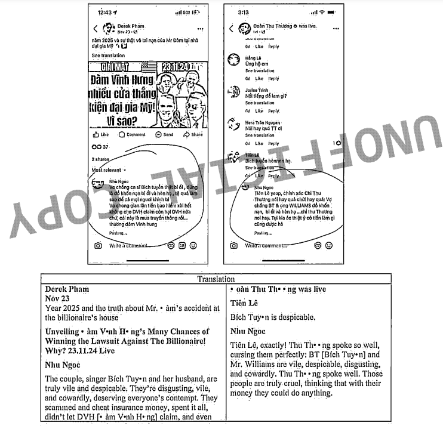

Disclaimer of liability:
The material and information contained on this website is for general information purposes only. You should not
rely upon the material or information ont the website as a basis for making any business, legal or any other
decisions.
Tuyên bố miễn trừ trách nhiệm:
Tài liệu và thông tin có trên trang web này chỉ dành cho mục đích thông tin chung. Bạn không nên dựa vào tài
liệu hoặc thông tin trên trang web làm cơ sở để đưa ra bất kỳ quyết định kinh doanh, pháp lý hoặc bất kỳ quyết
định nào khác.
1242113 1242113
Harris County - County Civil Court at Law No. 1 Tòa
án
dân sự quận Harris - Luật số 1
CAUSE NO. VỤ KIỆN SỐ
1242113 1242113
GERARD RICHARD WILLIAMS:III GERARD RICHARD
WILLIAMS:III
Plaintiff, Nguyên
đơn,
IN THE COUNY CIVIL COURT TẠI TÒA ÁN DÂN SỰ
QUẬN
AT LAW NO. 1 AT LAW NO. 1
DAI'DUONG PHAM (A/K/A-DEREK PHAM), DAI'DUONG
PHAM
(A/K/A-DEREK PHAM),
THU THUONG DOAN, THU THUONG DOAN,
TU NGUYEN, TU NGUYEN,
(A/K/A THANH TU'NGUYEN) and NHU TA, (A/K/A THANH
TU'NGUYEN) và NHU TA,
HARRIS COUNTY, QUẬN HARRIS,
TEXAS TEXAS
PLAINTIFF'S VERIFIED SECOND AMENDED PETITION,
ĐƠN
KIỆN SỬA ĐỔI LẦN THỨ HAI ĐÃ ĐƯỢC XÁC MINH CỦA NGUYÊN ĐƠN,
APPLICATION FOR TEMPORARY INJUNCTION, ĐƠN XIN
CẤM
TẠM THỜI,
PERMANENT INJUNCTION; CẤM VĨNH VIỄN;
AND REQUEST FOR DISCLOSURES. VÀ YÊU CẦU TIẾT
LỘ.
COMES NOW Plaintiff, ĐẾN NGAY Nguyên đơn,
Gerard Richard Williams III (hereafter "Gerard Williams" or "Plaintiff Gerard
Williams"), Gerard Richard Williams III (sau đây gọi là "Gerard Williams"
hoặc "Nguyên đơn Gerard Williams"),
and files this Verified Second Amended Petition; và
nộp Đơn xin sửa đổi lần thứ hai đã được xác minh này;
including an Application for Temporary Injunction,
bao gồm Đơn xin Lệnh tạm thời,
Permanent Injunction, Lệnh cấm vĩnh viễn,
and Request for Disclosures, và Yêu cầu tiết
lộ,
and respectfully shows the Court as follows: và
kính trình bày trước Tòa án như sau:
I. INTRODUCTION GIỚI THIỆU
[It's] hard to believe that anyone with an
average
level of intelligence could think
that by using freedom of speech as an excuse they could say all of these insults ... [Thật] khó tin rằng bất kỳ ai có trình độ thông minh trung bình lại có thể nghĩ
rằng
bằng cách lấy quyền tự do ngôn luận làm cái cớ, họ có thể nói ra tất cả những lời lăng mạ này ...
freely on social media and believe that the target won't feel attacked and that
the
system won't respond. thoải mái trên mạng xã hội và tin rằng mục tiêu
sẽ
không cảm thấy bị tấn công và hệ thống sẽ không phản ứng.
1.
The above statement made just last month by the Spanish Supreme Court in the Dalas
Review matter (2023),1, Tuyên bố trên được Tòa án Tối cao Tây
Ban Nha
đưa ra vào tháng trước trong Dalas Review vấn đề (2023),
emphasizes that in todays' world, nhấn mạnh rằng
trong thế giới ngày nay,
defamatory and overtly harassing phỉ báng và quấy
rối công khai
-1-
comments on social media platforms. bình luận trên
các nền tảng truyền thông xã hội.
as well as viewer or subscribers endorsement of such comments - are not protected
free speech. cũng như người xem hoặc người đăng ký sự xác nhận của những
bình luận như vậy - không được bảo vệ quyền tự do ngôn luận.
Freedom of speech has some critical boundaries, Tự
do ngôn luận có một số ranh giới quan trọng,
and like in Dalas Review, và giống như trong Đánh
giá Dalas,
those boundaries have been crossed here. những ranh
giới đó đã bị vượt qua ở đây.
2.
This case arises from Defendants' deliberate and egregious campaign of daily internet
defamation and criminal cyber-harassment aimed at spreading misinformation to the over 300;000 Vietnamese
American residents in Texas (including more than 150,000 residents in Houston alone) 2 in order
to incite
hysteria and potential violence against Plaintiff and his family. Vụ án
này phát sinh từ chiến dịch phỉ báng internet và quấy rối hình sự trên mạng hàng ngày của Bị đơn nhằm mục
đích phát tán thông tin sai lệch cho hơn 300.000 cư dân người Mỹ gốc Việt tại Texas (bao gồm hơn 150.000 cư
dân chỉ riêng tại Houston) nhằm kích động sự hoảng loạn và bạo lực tiềm tàng đối với Nguyên đơn và gia
đình ông.
3.
Since at least November 2024, Ít nhất là kể từ
tháng 11 năm 2024,
Defendants have undertaken a targeted defamation and harassment campaign on their
YouTube channels and Facebook pages and-livestreams against Plaintiff an his family. Các Bị cáo đã thực hiện một chiến dịch phỉ báng và quấy rối có chủ đích trên các kênh
YouTube và trang Facebook của họ và phát trực tiếp chống lại Nguyên đơn và gia đình của anh ta.
On information and belief, Về thông tin và niềm
tin,
the Defendants are working jointly as fans, Các Bị
cáo đang làm việc chung với tư cách là người hâm mộ,
friends, bạn bè,
relatives, họ hàng,
and/or paid Youtubers and/or Facebook commentators with whom Dam Vinh Hung,
và/hoặc những người dùng Youtube được trả tiền và/hoặc những người bình luận trên
Facebook mà Đàm Vĩnh Hưng,
a famous Vietnamese singer ("Dam Vinh Hung"), một
ca sĩ nổi tiếng của Việt Nam ("Đàm Vĩnh Hưng"),
has a close relationship. có mối quan hệ thân
thiết.
They include: Bao gồm:
Defendant Tu Nguyen (a/k/a Thanh Tu Nguyen) ("Nguyen"); Bị cáo Tu Nguyen (còn gọi là Thanh Tu Nguyen) ("Nguyen");
Defendant Nhu Ta ("Ta"); Bị cáo Nhu Ta
("Ta");
Defendant Dai Duong Pham (a/k/a Derek Pham) ("Pham"); Bị cáo Dai Duong Pham (còn gọi là Derek Pham) ("Pham");
and và
Defendant Thu Thuong Doan ("Doan"); Bị cáo
Thu Thuong
Doan ("Doan");
-2-
4. Defendants' smear campaign stems
from Plaintiff's former lawsuit with Dam Vinh
Hung. Chiến dịch bôi nhọ của Bị đơn bắt nguồn từ vụ kiện trước đây của
Nguyên đơn với Đàm Vĩnh Hưng.
The lawsuit was based of a self-inflicted injury that Dam Vinh Hung sustained when
performing at Plaintiff's residence in February 2024. Vụ kiện dựa trên
một vụ tự gây thương tích mà Đàm Vĩnh Hưng phải chịu khi biểu diễn tại nhà riêng của Nguyên đơn vào tháng 2
năm 2024.
Dam Vinh Hung sought over $50,000,000 in damages against Plaintiff. Đàm Vĩnh Hưng yêu cầu Nguyên đơn bồi thường thiệt hại hơn 50.000.000 đô la.
But Dam Vinh Hung voluntarily dismissed the lawsuit at the end of last year.'3'
Nhưng Đàm Vĩnh Hưng đã tự nguyện bác bỏ vụ kiện vào cuối năm ngoái.'3'
5. Despite the dismissal,
Mặc dù đã bác bỏ,
Defendants continue in their coordinated efforts to tarnish Plaintiff and his family's
reputation through inflammatory posts and online interviews. Bị đơn vẫn
tiếp tục phối hợp nỗ lực làm hoen ố danh tiếng của Nguyên đơn và gia đình ông thông qua các bài đăng gây
kích động và các cuộc phỏng vấn trực tuyến.
6. These posts, Những bài đăng này,
interviews and comments promulgated by Defendants are toxic, các cuộc phỏng vấn và bình luận do Bị đơn đưa ra là có tính chất độc hại,
untrue, không đúng sự thật,
and in some instances, và trong một số trường
hợp,
extremely threatening and alarming. cực kỳ đe dọa
và đáng báo động.
As set forth herein, Như đã nêu trong đây,
Defendants have encouraged their fans to contact Plaintiff and coerce him into paying
Dam Vinh Hung millions of dollars. Bị đơn đã khuyến khích người hâm mộ
của họ liên hệ với Nguyên đơn và ép buộc ông ta trả cho Đàm Vĩnh Hưng hàng triệu đô la.
Defendant s have provided viewers with Plaintiff's home address and information about
his family. Bị đơn đã cung cấp cho người xem với địa chỉ nhà riêng của
Nguyên đơn và thông tin về gia đình anh ta.
Defendants' viewers, Người xem của Bị đơn,
subscribers and commentators have called Plaintiff and his wife terrible derogatory
terms. người đăng ký và người bình luận đã gọi Nguyên đơn và vợ anh ta là
những từ ngữ xúc phạm khủng khiếp.
Some of them have even made death threats and called for Plaintiff to be
murdered, Một số người trong số họ thậm chí còn đưa ra lời đe dọa giết
người và kêu gọi giết Nguyên đơn,
causing Plaintiff to fear for his and his family's lives. khiến Nguyên đơn lo sợ cho tính mạng của mình và gia đình.
And in each instance, Và trong mỗi trường
hợp,
Defendants took no action to discourage their subscribers or commentators from making
such comments. Bị đơn không có hành động nào để ngăn cản người đăng ký
hoặc người bình luận của họ đưa ra những bình luận như vậy.
7. These statements go far beyond
protected free speech. Những tuyên bố này vượt xa phạm vi bảo vệ miễn phí
bài phát biểu.
The slanderous, Những lời vu khống,
libelous, phỉ báng,
and violent statements made and encouraged by Defendants have caused significant harm
to both plaintiff Gerard Williams' reputation and that of his wife, và
những tuyên bố bạo lực do Bị đơn đưa ra và khuyến khích đã gây ra tổn hại đáng kể đến danh tiếng của cả
nguyên đơn Gerard Williams và vợ của ông,
exposing them to the public hatred, khiến họ phải
chịu sự căm ghét của công chúng,
contempt, sự khinh miệt,
ridicule, sự chế giễu,
financial damage, thiệt hại về tài chính,
and fear for their lives. và lo sợ cho tính mạng
của họ.
-3-
Plaintiff respectfully asks that this Court intervene to stop Defendants'
harmful, Nguyên đơn kính đề nghị Tòa án can thiệp để ngăn chặn hành vi
có hại của Bị đơn,
coordinated actions. các hành động phối
hợp.
II. DISCOVERY CONTROL PLAN KẾ HOẠCH KIỂM SOÁT
KHÁM
PHÁ
8. Plaintiff Gerard Williams
asserts that discovery in this matter should be conducted
pursuant to TEX. Nguyên đơn Gerard Williams khẳng định rằng việc khám
phá trong vấn đề này phải được tiến hành theo TEX.
R. R.
Civ. Civ.
P. P.
190.3 (Level 2) 190.3 (Mức 2)
III. PARTIES CÁC BÊN
9. Plaintiff GERARD RICHARD WILLIAM
III is a private individual residing in California
and a former resident of Texas, Nguyên đơn GERARD RICHARD WILLIAM III là
một cá nhân cư trú tại California và là cựu cư dân của Texas,
Relevant here, Có liên quan ở đây,
Plaintiff maintains a number of contacts in Houston's Vietnamese American community
and regularly conducts business in this district. Nguyên đơn duy trì một
số mối quan hệ trong cộng đồng người Mỹ gốc Việt tại Houston và thường xuyên tiến hành kinh doanh tại khu
vực này.
10. Defendant DAI DUONG PHAM (a/k/a
Derek Pham)("Pham") was personally served and has
made a general appearance in this Court. Bị đơn DAI DUONG PHAM (còn gọi
là Derek Pham) ("Pham") đã được phục vụ trực tiếp và đã thực hiện xuất hiện chung tại Tòa án này.
Plaintiff asserts that this Defendant has waived his personal jurisdiction claim and
venue challenge. Nguyên đơn khẳng định rằng Bị đơn này đã từ bỏ yêu cầu
về quyền tài phán cá nhân và thách thức về địa điểm xét xử.
11. Dependent THU THUONG DOAN
("Doan") was personally served and has made a general
appearance in this court. Người phụ thuộc THU THUONG DOAN ("Doan") đã
được phục vụ cá nhân và đã xuất hiện chung tại tòa án này.
Plaintiff asserts that this Defendant has waived her personal jurisdiction claim and
venue challenge. Nguyên đơn khẳng định rằng Bị đơn này đã từ bỏ yêu cầu
về quyền tài phán cá nhân và thách thức về địa điểm xét xử.
12. Defendant NHU TA (a/k/a Nhu
Ngoc) ("Ta") was served and has met a general appearance
in this court. Bị đơn NHU TA (hay còn gọi là Nhu Ngoc) ("Ta") đã được
phục vụ và đã xuất hiện chung tại tòa án này.
13. Dependent TU NGUYEN (a/k/a Thanh
Tu Nguyen) ("Nguyen"), Người phụ thuộc TU NGUYEN (còn gọi là Thanh Tu
Nguyen) ("Nguyen"),
a Texas resident was personally served and has filed an answer in this court.
một cư dân Texas đã được phục vụ trực tiếp và đã nộp đơn trả lời lên tòa án
này.
IV. THIS COURT CAN EXERCISE SUBJECT MATTER & PERSONAL JURISDICTION OVER ALL
DEFENDANTS TÒA ÁN NÀY CÓ THỂ THỰC HIỆN VỀ VẤN ĐỀ & QUYỀN HẠN CÁ NHÂN
ĐỐI VỚI TẤT CẢ CÁC BỊ CÁO
14. This Court has subject matter
jurisdiction of this Second amended Petition because
the amount in controversy meets this Court's jurisdictional requirement under Tex. Tòa án này có thẩm quyền về vấn đề đối với Bản kiến nghị sửa đổi lần thứ hai này vì
số tiền đang tranh chấp đáp ứng yêu cầu về quyền tài phán của Tòa án này theo Bộ luật Texas.
Gov't Code Sec. Bộ luật Chính phủ Mục
24.007,24.008 and Tex. 24.007,24.008 và
Tex.
R. R.
Civ. Civ.
P.47. P.47.
-4-
15. The Court has personal
jurisdiction of Defendants Nguyen and Ta because both are
residents of Harris County, Tòa án có thẩm quyền cá nhân đối với Bị cáo
Nguyen và Ta vì cả hai đều là cư dân của Quận Harris,
Texas. Texas.
As stated above both Dependents Nguyen and Ta have already made appearances in this
matter and do not contest or venue. Như đã nêu ở trên, cả Người phụ
thuộc Nguyen và Ta đều đã xuất hiện trong vấn đề này và không phản đối hoặc đến địa điểm xét xử.
16.
This Court may also exercise personal jurisdiction of a non-resident Defendants Pham
and Doan because, Tòa án này cũng có thể thực hiện thẩm quyền cá nhân
đối với Bị cáo Pham và Doan không phải là cư dân vì,
inter alia: trong số những lý do khác:
(i) each waived its challenge to personal jurisdiction by failing to adhere to the
special appearance requirements under Texas Rule of Civil Procedure 120a; (i) mỗi bên đã từ bỏ quyền thách thức đối với thẩm quyền cá nhân của mình bằng cách
không tuân thủ các yêu cầu xuất hiện đặc biệt theo Quy tắc của Texas Thủ tục tố tụng dân sự 120a;
(ii) each has substantial contacts with Texas and targeted audience members,
(ii) mỗi bên đều có mối liên hệ đáng kể với Texas và các thành viên đối tượng mục
tiêu,
users, người dùng,
subscribers and commentators located in Texas in posting their online content;
người đăng ký và người bình luận ở Texas khi đăng nội dung trực tuyến của
họ;
(iii) the damage resulting from Defendants Pham and Doan's conduct and felt,
(iii) thiệt hại do hành vi của Bị cáo Pham và Doan gây ra và cảm thấy,
at least in part, ít nhất là một phần,
in this district; trong quận này;
and (iv) each is part of a joint civil conspiracy with two Texas residents.
và (iv) mỗi bên đều là một phần của âm mưu dân sự chung với hai cư dân
Texas.
A. The Non-Resident Defendants Waived Their Challenge to Personal Jurisdiction.
Các Bị đơn Không thường trú đã Từ bỏ Thách thức của Họ đối với Quyền tài phán Cá
nhân.
17.
Defendants Pham and Doan failed to strictly comply with Texas Rule of Civil Procedure
120a's special appearance requirements to challenge personal jurisdiction. Các Bị đơn Pham và Doan đã không tuân thủ nghiêm ngặt các yêu cầu về sự xuất hiện đặc
biệt của Quy tắc Tố tụng Dân sự Texas 120a để thách thức quyền tài phán cá nhân.
As such, Do đó,
these non-resident Defendants waived their challenge to personal jurisdiction.
Các Bị đơn không thường trú này đã từ bỏ thách thức quyền tài phán cá nhân của
họ.
18.
Additionally, Ngoài ra,
the two non-resident Defendants' motions challenging personal jurisdiction are
conclusory. các động thái thách thức quyền tài phán cá nhân của hai Bị
đơn không thường trú là kết luận.
Even if their assertions were accurate (they are not), Ngay cả khi lời khẳng định của họ là chính xác (chúng không chính xác),
Defendants failed to substantiate their allegations with competent evidence,
Bị cáo đã không chứng minh được cáo buộc của mình bằng bằng chứng có thẩm
quyền,
even for in-camera review. ngay cả khi xem xét
kín.
B. This Court Alternatively Has Personal Jurisdiction Over The Non-Resident Defendants
Under Texas's Long-Arm Statute. Tòa án này thay thế có thẩm quyền cá
nhân đối với Bị cáo không thường trú theo Luật vũ khí dài của Texas.
19.
In the addition and alternative, Ngoài ra và thay
thế,
this Court can exercise personal jurisdiction over Defendants Pham and Doan under the
Texas long-arm statute because they are committing a tort, Tòa án này có
thể thực hiện thẩm quyền cá nhân đối với Bị cáo Pham và Doan theo luật vũ khí dài của Texas vì họ đang phạm
tội ngoài hợp đồng,
in whole or in part, toàn bộ hoặc một
phần,
in Texas. tại Texas.
TEX. TEX.
CIV. CIV.
PRAC. PRAC.
& REM CODE ANN. & REM CODE ANN.
17.042. 17.042.
20.
Upon information and belief, Theo thông tin và
niềm tin,
Defendants Pham and Doan conspired with the two Harris County Forum Defendants Nguyen
and Ta. Bị cáo Pham và Doan đã thông đồng với hai Bị cáo Harris County
Forum là Nguyen và Ta.
This conduct was undertaken with the intent to coerce Plaintiff into settling and
paying Dam Vinh Hung. Hành vi này được thực hiện với mục đích ép buộc
Nguyên đơn phải giải quyết và trả tiền cho Đàm Vĩnh Hưng.
-5-
This campaign included a coordinated effort to tarnish the reputation of Plaintiff and
his wife through inflammatory posts and interviews published by Defendants to encourage and endorse their
guests and their viewers to slander Plaintiff and his wife. Chiến dịch
này bao gồm một nỗ lực phối hợp nhằm làm hoen ố danh tiếng của Nguyên đơn và vợ ông thông qua các bài đăng
và cuộc phỏng vấn mang tính kích động do Bị đơn công bố để khuyến khích và ủng hộ khách mời và người xem của
họ phỉ báng Nguyên đơn và vợ ông.
21. Defendants Pham and Doan
intentionally targeted and interacted with residents of
Texas (particularly those in Harris County) and have amassed hundreds of thousands of views on their
content. Bị đơn Pham và Doan cố tình nhắm mục tiêu và tương tác với cư
dân Texas (đặc biệt là những người ở Quận Harris) và đã thu hút hàng trăm nghìn lượt xem nội dung của
họ.
Since December 2024, Kể từ tháng 12 năm
2024,
Defendant Pham has appeared nightly on his YouTube channel, Bị đơn Pham đã xuất hiện hàng đêm trên kênh YouTube của mình,
Nua Vong Trai Dat, Nua Vong Trai Dat,
alongside guests such as Defendant Doan. cùng với
khách mời chẳng hạn như Bị cáo Đoàn.
Additionally, Ngoài ra,
Mr. Ông
Mai Tien Dung of TD TV, Mai Tiến Dũng của TD
TV,
a close associate of Dam Vinh Hung and/or his agent, là cộng sự thân cận của Đàm Vĩnh Hưng và/hoặc người đại diện của anh,
invited Forum Defendant Nguyen to his livestream broadcasts on January 10,
đã mời Bị cáo Nguyễn Diễn đàn đến buổi phát sóng trực tiếp của mình vào ngày 10
tháng 1,
2025, năm 2025,
and January 13, và ngày 13 tháng 1,
2025. năm 2025.
During these livestreams, Trong các buổi phát
trực tiếp này,
these non-resident Defendants interacted with Texas and Harris Country viewers and
subscribers, Những Bị cáo không phải là cư dân này đã tương tác với
người xem và người đăng ký của Texas và Harris Country,
encouraging and endorsing slanderous statements against Plaintiff. khuyến khích và ủng hộ những tuyên bố phỉ báng chống lại Nguyên đơn.
22. Similarly, Tương tự như vậy,
since December 2024, kể từ tháng 12 năm
2024,
Defendant Doan has daily posted defamatory content on her Facebook page and YouTube
channel. Bị cáo Doan đã đăng nội dung phỉ báng hàng ngày trên trang
Facebook và kênh YouTube của mình.
Through these posts, Thông qua những bài đăng
này,
she has actively encouraged and endorsed her viewers to disparage Plaintiff and his
wife. cô ấy đã tích cực khuyến khích và ủng hộ người xem của mình hạ
thấp Nguyên đơn và vợ của anh ta.
She has jeopardized Plaintiff's safety and endanger his life. Cô ấy đã gây nguy hiểm cho sự an toàn của Nguyên đơn và gây nguy hiểm đến tính mạng
của Nguyên đơn.
23. These actions were neither
untargeted nor random;
Những hành động này không phải là không có mục tiêu hoặc ngẫu nhiên;
rather, thay vào đó,
they were deliberately directed at Texas residents, chúng được cố ý hướng đến cư dân Texas,
distinguishing them from activities that might incidentally affect other
states. phân biệt chúng với các hoạt động có thể ảnh hưởng đến các tiểu
bang khác.
24. By engaging in defamatory
activity aimed at Vietnamese American Texas
residents, Bằng cách tham gia vào hoạt động phỉ báng nhằm vào cư dân
người Mỹ gốc Việt tại Texas,
Defendants had fair warning that they could be sued in Texas. Bị cáo đã được cảnh báo công bằng rằng họ có thể bị kiện tại Texas.
If one chooses to instigate a conflict in Texas,
Nếu một người chọn cách kích động xung đột ở Texas,
it is reasonable to expect the matter to be resolved in this Texas Court.
có lý khi mong đợi vấn đề được giải quyết tại Tòa án Texas này.
-6-
25. The non-resident Defendants have
failed to challenge each basis for personal jurisdiction, Các Bị cáo
không thường trú đã không phản đối từng cơ sở cho quyền tài phán cá nhân,
although it is their burden. mặc dù đó là gánh
nặng của họ.
V. VENUE IS PROPER IN THIS COURT ĐỊA ĐIỂM XÉT XỬ
LÀ PHÙ HỢP Ở TÒA ÁN NÀY
26. Venue is proper in Harris County
because it is where all or a substantial part of the events at issue here took place. Địa điểm xét xử là phù hợp ở Quận Harris vì đây là nơi diễn ra toàn bộ hoặc một phần
đáng kể các sự kiện có liên quan ở đây.
TEX. TEX.
CIV. CIV.
PRAC. PRAC.
& REM. & REM.
CODE ANN. MÃ ANN.
15.002(A)(1). 15.002(A)(1).
Additionally, Ngoài ra,
Defendants Ta and Nguyen reside in Harris County,
Bị cáo Ta và Nguyen cư trú tại Quận Harris,
and all claims against all Defendants arise out of the same transaction, và tất cả các khiếu nại đối với tất cả Bị cáo đều phát sinh từ cùng một giao
dịch,
occurrence, sự kiện,
or series of transactions or occurrences. hoặc
một loạt các giao dịch hoặc sự kiện.
See id. Xem id.
15.005, 15.005,
15.002(a)(2). 15.002(a)(2).
27.Alternatively, 27. Hoặc,
non-resident Defendants Pham and Doan waived their venue challenge because they
failed to raise the issue in their first pleading in response to the lawsuit with competent facts and
evidence. Bị cáo không thường trú Pham và Doan đã từ bỏ quyền khiếu nại
về địa điểm xét xử vì họ đã không nêu vấn đề này trong đơn khởi kiện đầu tiên của mình để đáp lại vụ kiện
với các sự kiện và bằng chứng có thẩm quyền.
TEX. TEX.
CIV. CIV.
PRAC. PRAC.
& REM. & REM.
CODE ANN. MÃ ANN.
15.063; 15.063;
Gordon v. Gordon v.
Jones, Jones,
196 S.W.3d376, 196 S.W.3d376,
383 (Tex. 383 (Tex.
App. App.
- Houston [1st Dist.] 2006, - Houston [Quận 1]
2006,
not pet.). không phải vật nuôi.).
VI. FACTUAL BACKGROUND'4' SỰ THẬT
BỐI CẢNH'4'
A. False and Malicious Internet Defamation and Cyber Harassment Conducted
by Defendant
Pham. Phỉ báng và quấy rối trên mạng Internet gian dối và ác ý do Bị cáo
Phạm thực hiện.
1. Defamatory Smear Campaign on Defendant Pham's YouTube
Livestream Chiến dịch bôi nhọ phỉ báng trên YouTube Livestream của Bị
cáo Phạm
28. On December 8, Ngày 8 tháng 12,
2024, 2024,
December 12, Ngày 12 tháng 12,
2024, 2024,
December 13, Ngày 13 tháng 12,
2024, 2024,
and every day thereafter, và mỗi ngày sau
đó,
Defendants Pham and Doan, Bị cáo Phạm và
Đoàn,
joined by forum Defendant Nguyen, tham gia diễn
đàn Bị cáo Nguyễn,
orchestrated a defamatory smear campaign through Defendant Pham's YouTube livestream
channel, đã dàn dựng một chiến dịch bôi nhọ phỉ báng thông qua kênh phát
trực tiếp YouTube của Bị cáo Phạm,
Nua Vong Trai Dat Tv
(https://www.youtube.com/channel/UCfl_G9BwH-DhtNn-y0q_7aA). Đài truyền
hình Nua Vong Trai Dat (https://www.youtube.com/channel/UCfl_G9BwH-DhtNn-y0q_7aA).
Defendant Pham's channel has amassed over 362,000 subscribers, Kênh của Bị cáo Phạm đã tích lũy được hơn 362.000 người đăng ký,
and the total number of views on all of his videos exceeds 180 million. và tổng số lượt xem trên tất cả các video của anh ấy vượt quá 180 triệu.
'4' As incorporated and adopted from Appendix B and Plaintiff's Affidavit attached
hereto as Appendix C. '4' Như được kết hợp và thông qua từ Phụ lục B và
Bản tuyên thệ của Nguyên đơn được đính kèm tại đây là Phụ lục C.
-7-
29. Each video targeted Plaintiff and
Plaintiff's wife. Mỗi video đều nhắm vào Nguyên đơn và vợ của Nguyên
đơn.
Each session lasted two to three and a half hours and invited and encouraged
listeners, Mỗi buổi kéo dài từ hai đến ba tiếng rưỡi và mời và khuyến
khích người nghe,
commentators, người bình luận,
and subscribers - particularly those in Texas and Harris County - and other places to
interact by calling in, và người đăng ký - đặc biệt là những người ở
Texas và Quận Harris - và những nơi khác để tương tác bằng cách gọi điện,
verbally commenting, bình luận bằng lời,
or leaving messages about Plaintiff and his pending lawsuit with Dam Vinh
Hung. hoặc để lại tin nhắn về Nguyên đơn và vụ kiện đang chờ xử lý của
anh ta với Đàm Vĩnh Hưng.
30. The alarming content in the smear
campaign has escalated significantly over the last
four months. Nội dung đáng báo động trong chiến dịch bôi nhọ đã leo
thang đáng kể trong bốn tháng qua.
For example, Ví dụ,
during the livestream on December 13, trong buổi
phát trực tiếp vào ngày 13 tháng 12,
2024, năm 2024,
a caller using a phone number ending in 510 allegedly contacted Defendant
Pham. một người gọi sử dụng số điện thoại có đuôi là 510 được cho là đã
liên lạc với Bị đơn Pham.
During the livestreamed call, Trong cuộc gọi phát
trực tiếp,
Defendant Pham repeatedly invited the "510 Caller" to return to the
livestream, Bị đơn Pham đã nhiều lần mời "Người gọi 510" quay lại buổi
phát trực tiếp,
and further encouraged and incited to wear a billboard and stage a protest outside
Qualcomm in San Diego (where Plaintiff presently serves as a Senior Vice President of Engineering).
và tiếp tục khuyến khích và kích động đeo biển quảng cáo và tổ chức biểu tình bên
ngoài Qualcomm ở San Diego (nơi Nguyên đơn hiện đang giữ chức Phó chủ tịch cấp cao Kỹ thuật).
The protest was to allegedly demand "Justice for Dam Vinh Hung, Cuộc biểu tình được cho là để yêu cầu "Công lý cho Đàm Vĩnh Hưng,
who lost three toes at Plaintiff Gerard Williams' home without compensation due to
Plaintiff's negligence, người đã mất ba ngón chân tại nhà của Nguyên đơn
Gerard Williams mà không được bồi thường do sự bất cẩn của Nguyên đơn,
cruelty, sự tàn ác,
and misappropriation of the insurance proceeds which belong to Dam Vinh Hung."
và chiếm dụng số tiền bảo hiểm thuộc về Đàm Vĩnh Hưng."
31. Defendant Pham further told his
livestream audience that Plaintiff sent his
wife, Bị cáo Phạm nói thêm với khán giả phát trực tiếp rằng Nguyên đơn
đã cử vợ mình,
Tuyen Williams, Tuyen Williams,
to Vietnam in order to meet with reputable media outlets, đến Việt Nam để gặp gỡ các phương tiện truyền thông có uy tín outlet,
in an effort to smear singer Dam Vinh Hung's name. nhằm bôi nhọ tên tuổi của ca sĩ Đàm Vĩnh Hưng.
This allegation is entirely untrue. Lời cáo buộc
này hoàn toàn sai sự thật.
32. The Williams did not travel to
Vietnam and at no time has Plaintiff make any comment
to the Vietnamese media about his dispute with Dam Vinh Hung. Gia đình
Williams không đến Việt Nam và Nguyên đơn không bao giờ đưa ra bất kỳ bình luận nào với giới truyền thông
Việt Nam về tranh chấp của anh với Đàm Vĩnh Hưng.
His wife did make responses to the Vietnamese press, Vợ anh đã trả lời báo chí Việt Nam,
but these comments were truthful and based on statements made in Dam Vinh Hung's
public complaint. nhưng những bình luận này là sự thật và dựa trên các
tuyên bố trong đơn khiếu nại công khai của Đàm Vĩnh Hưng.
33. Similarly, Tương tự như vậy,
Plaintiff Gerard Williams did not make any comments to the press about his dispute
with Dam Vinh Hung. Nguyên đơn Gerard Williams không đưa ra bất kỳ bình
luận nào với báo chí về tranh chấp của mình với Đàm Vĩnh Hưng.
In a statement made by Dam Vinh Hung to Thanh Nien on June 11, 2024, Trong tuyên bố của Đàm Vĩnh Hưng gửi đến Thanh Niên vào ngày 11 tháng 6 năm
2024,
he alleged: ông cáo buộc:
"On February 19, 2024, "Vào ngày 19 tháng 2 năm
2024,
Mr Gerard Richard Williams III misused a concrete fountain by turning it into
a stage and a table for beverages during a party. Ông Gerard
Richard Williams III đã sử dụng sai mục đích một đài phun nước bằng bê tông bằng cách biến nó thành
sân khấu và bàn để đồ uống trong một bữa tiệc.
-8-
This caused the fountain to topple and fall, Điều
này khiến đài phun nước đổ và rơi xuống,
injuring singer Dam Vinh Hung's foot." làm bị
thương chân của ca sĩ Đàm Vĩnh Hưng."
34. This statement is patently
false. Tuyên bố này hoàn toàn sai.
The accident was not Plaintiffs' fault at all. Vụ
tai nạn hoàn toàn không phải lỗi của Nguyên đơn.
Dam Vinh Hung's injury was a self-inflicted product of his own negligence.
Chấn thương của Đàm Vĩnh Hưng là sản phẩm tự gây ra do sự bất cẩn của chính
anh.
Dam Vinh Hung confirmed this in a video posted on his Facebook page shortly
thereafter, Đàm Vĩnh Hưng đã xác nhận điều này trong một video được đăng
trên trang Facebook của anh ngay sau đó,
where he unequivocally admitted that he had decided to jump onto the Fountainhead in
an attempt to make a dramatic exit. trong đó anh thừa nhận một cách rõ
ràng rằng anh đã quyết định nhảy xuống Đài phun nước để cố gắng một lối thoát đầy kịch tính.
See Exhibits 1 and 1A below Xem Triển lãm 1 và 1A
bên dưới
-9-
Exhibit 1: Triển lãm 1:
Still image from Exhibit 1 video. Ảnh tĩnh từ
video Triển lãm 1.
-10-
-11-
34. In response to Dam Vinh Hung's
statement on June 11,2024, Đáp lại tuyên bố của Đàm Vĩnh Hưng ngày 11
tháng 6 năm 2024,
Plaintiff Gerard Williams stated to Thanh Nien on November 20,2024 that he genuinely
cherished Dam Vinh Hung; Nguyên đơn Gerard Williams đã tuyên bố với
Thanh Niên vào ngày 20 tháng 11 năm 2024 rằng anh thực sự trân trọng Đàm Vĩnh Hưng;
Dam Vinh Hung was regarded as a family member,
Đàm Vĩnh Hưng được coi như một thành viên trong gia đình,
like a close brother, như một người anh em thân
thiết,
since they were both born in the year of the Pig (1971). vì cả hai đều sinh năm Hợi (1971).
Plaintiff even still has CD signed by Mr Hung for his "brother," with the
note, Nguyên đơn thậm chí vẫn còn giữ đĩa CD do anh Hưng ký tặng cho
"anh trai" của mình, với lời nhắn,
"My best friend." "Người bạn thân nhất của
tôi."
Exhibit 2: Minh chứng 2:
The CD with singer Dam Vinh Hung's signature was shared by Mrs Gerard Williams with
Thanh Nien. Đĩa CD có chữ ký của ca sĩ Đàm Vĩnh Hưng được bà Gerard
Williams chia sẻ với Thanh Niên.
Photo: Ảnh:
Provided by the individual (NVCC). Do cá nhân
cung cấp (NVCC).
36. Plaintiff Gerard Williams' truthful
statements made in response to Thanh Nien are a far cry from Defendant Pham's false rumors that Plaintiffs
met with media outlets to smear Dam Vinh Hung's name, Những tuyên bố
trung thực của Nguyên đơn Gerard Williams đưa ra để trả lời Thanh Niên hoàn toàn khác xa với những tin đồn
sai sự thật của Bị đơn Phạm rằng Nguyên đơn đã gặp gỡ các cơ quan truyền thông để bôi nhọ tên tuổi của Đàm
Vĩnh Hưng,
No such conduct occurred and as such, Không có
hành vi nào như vậy xảy ra và như như vậy,
Defendant Pham's accusation was blatantly false and slanderous. Lời buộc tội của Bị cáo Phạm là hoàn toàn sai sự thật và vu khống.
-12-
37. Furthermore, Hơn nữa,
Defendant Pham, Bị cáo Phạm,
joined by Defendant Doan, cùng với Bị cáo
Đoàn,
manipulated Defendant Pham's audience during his livestream, đã thao túng khán giả của Bị cáo Phạm trong buổi phát trực tiếp của mình,
including a caller named "Sister Trang" who repeatedly called to slander Plaintiff
Gerard Williams. bao gồm một người gọi tên là "Chị Trang" đã nhiều lần
gọi điện để vu khống Nguyên đơn Gerard Williams.
Defendant Pham also persistently pressured a so-called "Doctor Hoa" and other
audience members in Canada, Bị cáo Phạm cũng liên tục gây sức ép với một
người được gọi là "Bác sĩ Hoa" và những khán giả khác thành viên tại Canada,
Australia, Úc,
and various states to falsely accuse Plaintiff Gerard Williams of defrauding Dam Vinh
Hung. và nhiều tiểu bang khác để vu cáo Nguyên đơn Gerard Williams lừa
đảo Đàm Vĩnh Hưng.
The aim was to allege that Plaintiff Gerard Williams failed to report to his home
insurance carrier into compensating Dam Vinh Hung for several million dollars. Mục đích là cáo buộc Nguyên đơn Gerard Williams đã không báo cáo với công ty bảo hiểm
nhà của mình để bồi thường cho Đàm Vĩnh Hưng số tiền lên đến hàng triệu đô la.
Additionally, Ngoài ra,
they insinuated that Plaintiff Gerard Williams committed insurance fraud and
misappropriated the proceeds. họ ám chỉ rằng Nguyên đơn Gerard Williams
đã gian lận bảo hiểm và biển thủ số tiền thu được.
These accusations were entirely baseless and slanderous. Những cáo buộc này hoàn toàn vô căn cứ và mang tính vu khống.
38. Below is a non-exhaustive list of
the videos posted by Defendant Pham in an effort to defame Plaintiff Gerard Williams. Dưới đây là danh sách không đầy đủ các video do Bị đơn Phạm đăng tải trong nỗ lực bôi
nhọ Nguyên đơn Gerard Williams.
Additional Videos Posted by Derek Pham: Các video
bổ sung do Derek Pham đăng:
-13-
-14-
-15-
All Videos and Livestreams Are Being Supplemented and Translated into English
Using AI
Technologies to Retrieve which are authenticated by Plaintiff Gerard Williams via his
affidavit,
Tất cả các video và buổi phát trực tiếp đều được bổ sung và dịch sang tiếng
Anh
bằng công nghệ AI để truy xuất, được Nguyên đơn Gerard Williams xác thực thông qua bản tuyên thệ của
mình,
and adopted into and attached hereto: và
được
thông qua và đính kèm vào đây:
2. Defendant Pham Encourages his YouTube Viewers-and
Subscribers to Make Threats of
Violence and Murder Against Plaintiffs. 2. Bị đơn Pham khuyến
khích
người xem và người đăng ký YouTube của mình đe dọa bạo lực và giết người đối với Nguyên đơn.
39. In addition to the false allegations
above,
Ngoài các cáo buộc sai trái nêu trên,
Defendant Pham continues to encourage and endorse threats of violence and murder
against Plaintiff through the comments made by his viewers on his daily livestreams. Bị đơn Pham tiếp tục khuyến khích và ủng hộ các mối đe dọa bạo lực và giết người đối
với Nguyên đơn thông qua các bình luận do người xem đưa ra trên các buổi phát trực tiếp hàng ngày của anh
ta.
For example, Ví dụ,
one user commented on Defendant Pham's December 31,2024 livestream to, một người dùng đã bình luận về buổi phát trực tiếp ngày 31 tháng 12 năm 2024 của Bị
cáo Phạm,
"Just send someone to murder Gerard; "Chỉ cần cử
ai đó đến giết Gerard;
why let him take up space on this Earth?", tại
sao lại để anh ta chiếm không gian trên Trái đất này?",
And under the January 3,2025 livestream, Và trong
buổi phát trực tiếp ngày 3 tháng 1 năm 2025,
another use: một mục đích sử dụng khác:
commented to, đã bình luận về,
"Fully back Derek Pham in the ongoing plan to murder Gerard for ruining DVH [Dam Vinh
Hung] do not let him live. "Hoàn toàn ủng hộ Derek Phạm trong kế hoạch
đang diễn ra là giết Gerard vì đã hủy hoại DVH [Đàm Vĩnh Hưng], đừng để anh ta sống.
-16-
39. Plaintiff Gerard Williams should not
be subjected to the daily verbal attacks and
threats to him and his family's safety that accompany Defendant Pham's livestreams. Nguyên đơn Gerard Williams không nên phải chịu những lời công kích và đe dọa bằng
lời nói hàng ngày đối với anh ấy và sự an toàn của gia đình anh ấy đi kèm với các buổi phát trực tiếp của Bị
đơn Pham.
B. False and Malicious Internet Defamation and Harassment Comments
Written
by Defendant
Ta. Bình luận phỉ báng và quấy rối trên Internet sai sự thật và ác ý
do Bị đơn Ta viết.
41. Defendant Ta, Bị đơn Ta,
a Vietnamese American and Houston resident, là
người Mỹ gốc Việt và cư trú tại Houston,
stated on Facebook that Plaintiff and his wife illegally cheated an insurance carrier
and spent all the funds that should have been used to pay Dam Vinh Hung.
đã tuyên bố trên Facebook rằng Nguyên đơn và vợ đã lừa đảo một công ty bảo hiểm một cách bất hợp pháp và đã
tiêu hết số tiền lẽ ra phải được dùng để trả cho Đàm Vĩnh Hưng.
This statement is false and not substantiated by evidence. Tuyên bố này là sai sự thật và không có bằng chứng xác thực.
42. As shown in the two comments by
Defendant Ta below, Như thể hiện trong hai bình luận của Bị đơn Ta bên
dưới,
Defendant Ta has commented falsehoods about Plaintiff Gerard Williams in response to
Defendant Pham and Defendant Doan's pasts. Bị đơn Ta đã đưa ra những
bình luận sai sự thật về Nguyên đơn Gerard Williams để đáp lại quá khứ của Bị đơn Pham và Bị đơn
Doan.
One comment by Defendant Ta reads, Một bình luận
của Bị đơn Ta có nội dung như sau,
"[Plaintiff and Plaintiff's wife] scammed and cheat insurance money, "[Nguyên đơn và vợ của Nguyên đơn] đã lừa đảo và gian lận tiền bảo hiểm,
spent it all; đã tiêu hết;
didn't let DVH [Dam Vinh Hung] claim, không để
DVH [Đàm Vĩnh Hưng] khiếu nại,
and even harmed him; và thậm chí còn làm hại anh
ấy;
They bought the media." And in response to Defendant Doan's Facebook Live,
Họ đã mua phương tiện truyền thông." Và để đáp lại Facebook Live của Bị đơn
Đoàn,
Defendant Ta commented, Bị đơn Ta đã bình
luận,
"Mr Williams are vile, "Ông Williams thật đê
tiện,
despicable, đáng khinh bỉ,
disgusting, kinh tởm,
and cowardly. và hèn nhát.
Defendant Doan spoke well. Bị đơn Đoàn đã nói rất
hay.
Those people are truly cruel, Những người đó thực
sự tàn nhẫn,
thinking that with their money they could do anything," None of these comments are
true. nghĩ rằng với tiền của họ, họ có thể làm bất cứ điều gì," Không có
bình luận nào trong số này là đúng.
Plaintiff Gerard Williams was not responsible for Dam Vinh Hung's accident and did
not cheat his insurance carrier to allegedly avoid paying Dam Vinh Hung.
Nguyên đơn Gerard Williams không chịu trách nhiệm về tai nạn của Đàm Vĩnh Hưng và không lừa đảo công ty bảo
hiểm để trốn tránh trả tiền cho Đàm Vĩnh Hưng.
-17-

-18-
C.False and Malicious Internet Defamation, Phỉ
báng sai sự thật và ác ý trên Internet,
and Cyber Harassment Campaign Conduct by Defendant Nguyen: và Hành vi Chiến dịch Quấy rối trên Mạng của Bị cáo Nguyen:
43. Upon Information and belief,
Dựa trên Thông
tin và Niềm tin,
Defendant Pham, Bị cáo Pham,
Defendant Doan, Bị cáo Doan,
and their coconspirators entered an ongoing relationship with the Texas resident
Defendant Nguyen and Ta. và những kẻ đồng phạm đã bắt đầu mối quan hệ
liên tục với Bị cáo Nguyen và Ta, cư dân Texas.
Specifically, Cụ thể,
during a recent interview on TD TV on January 10 and January 13,2025, trong một cuộc phỏng vấn gần đây trên TD TV vào ngày 10 tháng 1 và ngày 13 tháng 1
năm 2025,
Defendant Nguyen unequivocally admitted that he had signed a Non-Disclosure Agreement
(NDA) with others concerning Plaintiff Gerard Williams's inducing Dam Vinh Hung to dismiss the lawsuit with
prejudice. Bị cáo Nguyễn thừa nhận rõ ràng rằng anh ta đã ký Thỏa thuận
bảo mật (NDA) với những người khác liên quan đến việc Nguyên đơn Gerard Williams dụ dỗ Đàm Vĩnh Hưng bác bỏ
vụ kiện với thành kiến.
In the January 10,2025, Trong cuộc phỏng vấn ngày
10 tháng 1 năm 2025,
interview, ,
Defendant Nguyen alleged that, Bị cáo Nguyễn cáo
buộc rằng,
as a forensic and cyber investigator and specialist (sic), với tư cách là một điều tra viên pháp y và mạng và chuyên gia (sic),
he could get into people's telephone (sic). anh
ta có thể truy cập vào điện thoại của mọi người (sic).
He alleged: Anh ta cáo buộc:
(a) Dam Vinh Hung must sue Gerard Williams' wife who is definitely
liable,
Đàm Vĩnh Hưng phải kiện vợ của Gerard Williams, người chắc chắn phải chịu
trách
nhiệm,
because the party where Dam Vinh Hung was injured was a commercial even
organized for
profit by the Williams, vì bữa tiệc mà Đàm Vĩnh Hưng bị thương
là một
bữa tiệc thương mại thậm chí được tổ chức vì lợi nhuận bởi Williams,
who allegedly sold tickets and sponsored the event without a permit.
những người bị cáo buộc đã bán vé và tài trợ cho sự kiện mà không có giấy
phép.
(This statement is false. (Tuyên bố này
là
sai.
In reality, Trên thực tế,
Plaintiff Gerard Williams and his wife only allowed Mong Linh Nguyen who was
a mutual
friend of Dam Vinh Hung Plaintiff to use his residence for a Vietnamese New Year celebration.
Nguyên đơn Gerard Williams và vợ chỉ cho phép Mộng Linh Nguyễn, một người
bạn chung
của Nguyên đơn Đàm Vĩnh Hưng, sử dụng nhà riêng của mình để tổ chức tiệc mừng năm mới của Việt
Nam.
No tickets were issued or sold by Plaintiff Gerard Williams and his wife for
the
private party. Nguyên đơn Gerard Williams và vợ không phát hành
hoặc bán
vé cho bữa tiệc riêng tư.
All attendees are invited guests. Tất cả
những
người tham dự đều là khách mời.
The invitation mentioned Gerard Williams,
Lời mời
có nhắc đến Gerard Williams,
Bich Tuyen, Bích Tuyền,
Duong Trieu Vu, Dương Triệu Vũ,
Dinh Thiet, Đình Thiết,
Quoc Cuong, Quốc Cường,
and Huy Dien only as the singers for the private party. và Huy Điền chỉ là ca sĩ cho bữa tiệc riêng.
At the bottom of the invitation, Cuối lời
mời,
it was noted: có ghi chú:
"At the entrance, "Tại lối vào,
please inform the security guard that [you wish to] enter the residence of
Gerard
Williams and Tiffany Nguyen for guest verification, vui lòng
thông báo
với nhân viên bảo vệ rằng [bạn muốn] vào nhà của Gerard Williams và Tiffany Nguyen để đón khách xác
minh,
purposes.) mục đích.)
(b) Gerard Williams cruelly used wealth to influence Vietnamese media to harm
Dam Vinh
Hung. Gerard Williams đã tàn nhẫn sử dụng sự giàu có để tác động
đến
truyền thông Việt Nam nhằm hãm hại Đàm Vĩnh Hưng.
(Again, (Một lần nữa,
this statement is likewise untrue without being substantiated with
evidence.
tuyên bố này cũng không đúng sự thật nếu không có bằng chứng xác
thực.
The Vietnamese media follows the case because Mr Darn Vinh Hung is a very
famous
Vietnamese singer, Truyền thông Việt Nam theo dõi vụ án vì ông
Đàm Vĩnh
Hưng là một ca sĩ Việt Nam rất nổi tiếng,
and Plaintiff is only a private citizen.)
và Nguyên đơn chỉ
là một công dân bình
thường.)
-19-
(c) Gerard Williams always refers to himself as a "billionaire" to
defame. (c) Gerard Williams luôn tự gọi mình là "tỷ phú" để bôi
nhọ.
Dam Vinh Hung by portraying Dam Vinh Hung as someone attempting to extort a
wealthy man. Đàm Vĩnh Hưng bằng cách miêu tả Đàm Vĩnh Hưng như
một người đang cố gắng tống tiền một người đàn ông giàu có.
(However, (Tuy nhiên,
this claim is untrue. tuyên bố này là
không đúng sự thật.
Plaintiff's name sometimes is referred to as a "billionaire" by his
technology colleagues, Tên của nguyên đơn đôi khi được các đồng
nghiệp trong ngành công nghệ gọi là "tỷ phú",
following the 2021 sale of his Nuvia Inc to Qualcomm for $1.4 billion and
thereafter becoming Senior Vice President of Qualcomm. sau khi
bán Nuvia Inc của mình cho Qualcomm với giá 1,4 tỷ đô la vào năm 2021 và sau đó trở thành Phó chủ
tịch cấp cao của Qualcomm.
In reality, Trên thực tế,
neither Plaintiff Gerard Williams nor his wife has ever referred to ourselves
as "billionaires." In fact, không Nguyên đơn Gerard Williams
cũng như vợ ông chưa bao giờ gọi chúng tôi là "tỷ phú". Trên thực tế,
the couple and their seven children lead a very simple life. cặp đôi và bảy đứa con của họ có cuộc sống rất giản dị.
(d) Gerard Williams induced Dam Vinh Hung into, (d) Gerard Williams đã dụ dỗ Đàm Vĩnh Hưng,
dismissing the underlying premise liability case with prejudice; bác bỏ vụ kiện trách nhiệm tiền đề cơ bản với định kiến;
and Thanh Tu Nguyen has evidence but he could not reveal because he did sign
an NDA. và Thanh Tú Nguyễn có bằng chứng nhưng anh ta không thể
tiết lộ vì anh ta đã ký một NDA.
(However, (Tuy nhiên,
this claim is false.) Also, khiếu nại này
là sai.) Ngoài ra,
Thanh Tu Nguyen's Declaration stated he never sign any NDA. Tuyên bố của Thanh Tú Nguyễn nêu rõ anh ta chưa bao giờ ký bất kỳ NDA
nào.
44. Defendant Nguyen also actively
participated in platforms associated with the coconspirator Mai Tien Dung, Bị cáo Nguyễn cũng tích cực tham gia vào các nền tảng liên quan đến đồng phạm Mai
Tiến Dũng,
including TD Media's YouTube channel and other platforms, bao gồm kênh YouTube của TD Media và các nền tảng khác,
thereby directly engaging in coordiated efforts with Dam Vinh Hung, do đó trực tiếp tham gia vào các nỗ lực phối hợp với Đàm Vĩnh Hưng,
Defendant Pham, Bị cáo Phạm,
and Defendant Doan to defame Plaintiff Gerard Williams and his wife. và Bị cáo Đoàn để phỉ báng Nguyên đơn Gerard Williams và vợ của ông.
D. False and Malicious Internet Defamation and Cyber Harassment Campaign
Conduct by
Defendant Doan. Hành vi của Bị cáo Đoàn trong Chiến dịch phỉ báng và
quấy rối trên mạng Internet sai sự thật và ác ý.
45. Since December 2024, Kể từ tháng 12 năm 2024,
Defendant Doan has published defamatory statements about Plaintiff and his
wife. Bị đơn Doan đã đăng tải những tuyên bố phỉ báng Nguyên đơn và vợ
của ông ta.
Her YouTube alone has over 149,000 subscribers and a total viewership count of over
16 million. Chỉ riêng YouTube của cô ấy đã có hơn 149.000 người đăng ký
và tổng số lượt xem là hơn 16 triệu.
Moreover, Hơn nữa,
she is an avid user of Facebook Live, cô ấy là
người dùng Facebook Live nhiệt tình,
amassing thousands of Viewers and attracting multiples shares and comments.
thu hút hàng nghìn Người xem và thu hút nhiều lượt chia sẻ và bình luận.
Through these posts, Thông qua các bài đăng
này,
she has actively interacted and encouraged her viewers and followers, cô ấy đã tích cực tương tác và khuyến khích người xem và người theo dõi của
mình,
including forum Defendant Ta, bao gồm cả diễn đàn
Bị đơn Ta,
to disparage Plaintiff Gerard Williams and his wife, để hạ thấp Nguyên đơn Gerard Williams và vợ của ông,
jeopardizing his safety and endangering his life.
gây nguy hiểm cho sự an toàn của ông và gây nguy hiểm đến tính mạng của ông.
46. Additionally, Ngoài ra,
Defendant Doan has continued to work in conjunction with Defendant Plaintiff
Defendant Doan has appeared as a guest on Defendant Pham's YouTube Channel to further the daily online
defamation campaign targeting Plaintiff Gerard Williams and his wife Bị
đơn Đoàn
đã tiếp tục làm việc phối hợp với Bị đơn Nguyên đơn Bị đơn Đoàn đã xuất hiện với tư cách là khách mời trên
Kênh YouTube của Bị đơn Phạm để thúc đẩy chiến dịch phỉ báng trực tuyến hàng ngày nhắm vào Nguyên đơn Gerard
Williams và vợ ông ấy
-20-
Even after appearing on Defendant Pham's livestream, Ngay cả sau khi xuất hiện trên buổi phát trực tiếp của Bị cáo Phạm,
Defendant Doan republishes and Bị cáo Đoàn đăng
lại và
summarizes the contents of Defendant Pham's livestreams. tóm tắt nội dung các buổi phát trực tiếp của Bị cáo Phạm.
47. Upon information and belief,
Theo thông tin và niềm tin,
it appears that Defendant Doan has been using her platform to spread online hate at
the behest of Dam Vinh Hung. có vẻ như Bị cáo Đoàn đã sử dụng nền tảng
của mình để phát tán thông tin thù hận trực tuyến theo lệnh của Đàm Vĩnh Hưng.
On December 11, 2024, Vào ngày 11 tháng 12 năm
2024,
Defendant Doan appeared on a YouTube Video unequivocally admitting her very close
relationship with Dam Vinh Hung, Bị cáo Đoàn đã xuất hiện trên một Video
YouTube thừa nhận rõ ràng mối quan hệ rất thân thiết của cô với Đàm Vĩnh Hưng,
and that she was a key person advising him to dismiss the premise liability lawsuit
against Gerard Williams. và rằng cô ấy là người chủ chốt tư vấn cho anh
ta bác bỏ vụ kiện trách nhiệm tiền đề chống lại Gerard Williams.
(See Exhibit 30.). (Xem Mục 30.).
Dam Vinh Hung has also made statements on Defendant Doan's Facebook posts,
Đàm Vĩnh Hưng cũng đã đưa ra tuyên bố trên các bài đăng trên Facebook của Bị cáo
Đoàn,
calling her his "blood sister." gọi cô ấy là "chị
em ruột thịt" của anh ta.
-21-
Exhibit 30: Bằng chứng 30:
On December 11,2024, Vào ngày 11 tháng 12 năm
2024,
Defendant Thu Thuong Doan appeared on a YouTube video unequivocally admitting her
very close relationship with Dam Vinh Hung and that she was a key person advising him to dismiss the premise
liability lawsuit against Gerard Williams. Bị cáo Thu Thương Đoàn đã
xuất hiện trên một video trên YouTube, thừa nhận rõ ràng mối quan hệ rất thân thiết của cô với Đàm Vĩnh Hưng
và rằng cô là người chủ chốt khuyên anh ta bác bỏ vụ kiện trách nhiệm tiền đề chống lại Gerard
Williams.
Exhibit 30: Bằng chứng 30:
On December 11,2024, Vào ngày 11 tháng 12
năm 2024,
Defendant Thu Thuong Doan appeared on a YouTube video unequivocally admitting
her very close relationship with Dam Vinh Hung and that she was a key person advising him to dismiss
the premise liability lawsuit against Gerard Williams. Bị cáo
Thu Thương Đoàn đã xuất hiện trên một video trên YouTube, thừa nhận rõ ràng mối quan hệ rất thân
thiết của cô với Đàm Vĩnh Hưng và rằng cô là người chủ chốt khuyên anh ta bác bỏ vụ kiện trách nhiệm
tiền đề đối với Gerard Williams.
In Exhibit 30, Trong Bằng chứng 30,
YouTuber Nguyen Tien Dung asked: YouTuber
Nguyễn Tiến Dũng đã hỏi:
"Do you know the reason why Dam Vinh Hung withdrew the lawsuit? "Anh có biết lý do tại sao Đàm Vĩnh Hưng rút đơn kiện không?
Some people say it's because he saw he was going to lose, Một số người nói rằng đó là vì anh ta thấy mình sắp thua,
so he withdrew. vì vậy anh ấy đã rút
lui.
Others say his lawyer advised him to do so. Những người khác nói rằng luật sư của anh ấy đã khuyên anh ấy làm như
vậy.
Some claim there must have been external pressure that coerced him to
withdraw. Một số người cho rằng phải có áp lực bên ngoài buộc
anh ấy phải rút lui.
So, Vậy,
in your opinion, theo ý kiến của
bạn,
what is the real reason?" lý do thực sự
là gì?"
At 45:22, Vào lúc 45:22,
Doan Thu Thuong said: Đoàn Thu Thương
nói:
"Yes, "Vâng,
I'm speaking sincerely now. Tôi đang nói
một cách chân thành.
I said, Tôi nói,
"Anh Hung [Dam Vinh Hung], "Anh Hùng [Đàm
Vĩnh Hưng],
I beg you, Tôi cầu xin anh,
please withdraw the lawsuit." Yes, hãy
rút đơn kiện." Vâng,
honestly, thành thật mà nói,
really meant it, thực sự có ý đó,
I also said, Tôi cũng nói,
"Just drop it, "Thôi bỏ đi,
let it all go, hãy buông bỏ hết
đi,
just withdraw the lawsuit. hãy rút đơn
kiện.
Please, Làm ơn,
I beg you, Tôi cầu xin anh,
just withdraw it." Basically, hãy rút
lại." Về cơ bản,
people kept pushing him-his siblings, mọi
người cứ thúc đẩy anh ấy - anh chị em ruột của anh ấy,
sister, chị gái,
and friends-also pressured him to drop the lawsuit, và bạn bè - cũng gây sức ép buộc anh ấy hủy đơn kiện,
and I was one of the people persistently urging him, và tôi là một trong
những người liên tục thúc giục anh ấy,
saying, nói rằng,
"Please, "Làm ơn,
please, làm ơn,
I beg you, Tôi cầu xin bạn,
withdraw the lawsuit." So yes, rút đơn
kiện." Vậy thì đúng vậy,
I did push for it, Tôi đã thúc đẩy điều
đó,
That is the truth, Đó là sự thật,
and I also talked about it online." và
tôi cũng đã nói về điều đó trực tuyến."
-22-
This admission by Doan Thu Thuong provides crucial context regarding the
dismissal of
the lawsuit in Orange County, Lời thừa nhận này của Đoàn Thu
Thương cung
cấp bối cảnh quan trọng liên quan đến việc bác bỏ vụ kiện ở Quận Cam,
California, California,
and Dam Vinh Hung's decision to dismiss it with prejudice. và quyết định bác bỏ vụ kiện có định kiến của Đàm Vĩnh Hưng.
It reveals that his decision was significantly influenced by his close
associates-family, Điều này cho thấy quyết định của anh chịu ảnh
hưởng
đáng kể từ những người cộng sự thân thiết-gia đình,
sisters, chị em gái,
friends and most notably, bạn bè và đáng
chú ý
nhất là
the persistent urging of Thu Thuong Doan for Dam Vinh Hung to withdraw the
premises
liability lawsuit. việc Đoàn Thu Thương liên tục thúc giục Đàm
Vĩnh Hưng
rút đơn kiện về trách nhiệm pháp lý của cơ sở.
Subsequently, Sau đó,
Doan has posted defamatory content daily on her Facebook page and YouTube
channel, Đoàn đã đăng nội dung phỉ báng hàng ngày trên trang
Facebook và
kênh YouTube của cô,
named Doan Thu Thuong, nêu tên Đoàn Thu
Thương,
accusing Gerard Williams and his wife of inducing Dam Vinh Hung to dismiss
the
lawsuit. cáo buộc Gerard Williams và vợ đã xúi giục Đàm Vĩnh
Hưng bác bỏ
vụ kiện.
She also encouraged and endorsed her viewers to disparage and curse Gerard
Williams
and his family members. Cô cũng khuyến khích và ủng hộ người xem
của
mình hạ thấp và nguyền rủa Gerard Williams và các thành viên gia đình anh ta.
48.These statements constituted slander and libel per quod, 48. Những tuyên bố này cấu thành hành vi phỉ báng và bôi nhọ per quod,
as they impeach Gerard's honesty, vì chúng làm
mất lòng trung thực của Gerard,
integrity, sự chính trực,
virtue, đức hạnh,
or reputation, hoặc danh tiếng,
exposing him to public contempt or ridicule. phơi
bày anh ta trước sự khinh miệt hoặc chế giễu của công chúng.
They also impair his honesty and integrity. Chúng
cũng làm suy yếu sự trung thực và liêm chính của anh ta.
In the exhibits below, Trong các bằng chứng dưới
đây,
Defendant Doan has used her platform to interact with users in perpetrating online
hate against Plaintiff Gerard Williams. Bị cáo Doan đã sử dụng nền tảng
của mình để tương tác với người dùng nhằm gây ra sự thù hận trực tuyến đối với Nguyên đơn Gerard
Williams.
Defendant Doan lauds in the fact that "...many more interesting articles [about
Plaintiff and his wife]" are coming, Bị cáo Doan ca ngợi rằng "...nhiều
bài viết thú vị hơn [về Nguyên đơn và vợ của anh ta]" sắp ra mắt,
and her commenters even thank her for "purportedly" reporting the truth. và những người bình luận của cô ấy thậm chí còn cảm ơn cô ấy vì "được cho là" đã báo
cáo sự thật.
However, Tuy nhiên,
these interactions have only fueled the on line smear campaign of Plaintiff and his
wife. những tương tác này chỉ thúc đẩy chiến dịch bôi nhọ trực tuyến của
Nguyên đơn và vợ của ông.
1.Posts on Thu Thuong Doan's Facebook Bài đăng
trên
Facebook của Thu Thuong Doan
profile: hồ sơ:
https: //www.facebook.com/profile.php?id=100087784975518
(1) Dec 29, 2024 Ngày 29 tháng 12 năm
2024,
(Exhibit 31)'5' (Triển lãm
31)'5'
The Story of a Tycoon Who Spent $300,000 to Supposedly Support and Sponsor His
Friend Câu chuyện về một ông trùm đã chi 300.000 đô la để được
cho là hỗ
trợ và tài trợ cho bạn mình
The story of a certain tycoon spending $300,000 to invest in and sponsor Mr
Dam's show
is just laughable to me. Câu chuyện về một ông trùm nào đó chi
300.000
đô la để đầu tư và tài trợ cho chương trình của ông Dam thì thật nực cười đối với tôi.
Even if the investment were $500,000 or $1 million, Kể cả khoản đầu tư là 500.000 đô la hay 1 triệu đô la,
I would still find it utterly ridiculous.
Tôi vẫn
thấy điều đó hoàn toàn vô lý.
Ladies and gentlemen, Thưa quý vị,
I don't care where that $300,000 was spent, Tôi
không quan tâm số tiền 300.000 đô la đó được chi vào đâu,
what program or organization it sponsored, nó tài
trợ cho chương trình hay tổ chức nào,
or how many times it was used. hay nó
được sử
dụng bao nhiêu lần.
The more I follow this story, Tôi càng
theo dõi
câu chuyện này,
the clearer the face of the man who is immoral as a stinky whore to
me. thì làm rõ hơn bộ mặt của người đàn ông vô đạo đức như một
con điếm thối tha đối với
tôi.
'5'
https:// www.facebook.com/permalink.php?story_fbid=561794320088829&id=100087747975518
-23-
To that certain tycoon, Gửi đến ông trùm
nào đó,
I won't call you a billionaire any more because You and your wife are the
ones who have pushed this story into the media stream, Tôi sẽ
không gọi anh là tỷ phú nữa vì chính anh và vợ anh là những người đã đưa câu chuyện này lên phương
tiện truyền thông,
inviting everyone to dig into it. mời mọi
người đào sâu vào nó.
The more people dig, Càng nhiều người đào
sâu,
the cleaver it becomes - your wife's unbelievably dirty/infamous past,
thì nó càng trở nên sắc bén - quá khứ bẩn thỉu/khét tiếng không thể tin
được của vợ anh,
isn't it? phải không?
Before trying to demean or harm others,
Trước khi cố gắng hạ thấp hoặc làm hại người khác,
why not reflect on yourself first? tại
sao không tự nhìn lại bản thân mình trước?
Today, Hôm nay,
it's not just you and your wife confronting Mr Dam, you are standing against
society and the people who genuinely love and support him. không
chỉ có bạn và vợ bạn đối đầu với ông Dam, bạn đang chống lại xã hội và những người thực sự yêu
thương và ủng hộ ông ấy.
Honestly, Thành thật mà nói,
your wife has an infamous and notorious past, vợ bạn có một quá khứ tai tiếng và khét tiếng,
doesn't she? phải không?
Isn't it clean?. Không phải là trong sạch
sao?.
Isn't it pure? Không phải là trong sáng
sao?
Isn't it compassionate and not immoral?
Không phải là từ bi và không vô đạo đức sao?
Just like the way you preach on media platform. Giống như cách bạn rao giảng trên nền tảng truyền thông.
Let me tell you, Để tôi nói cho bạn
biết,
that $300,000 to buy fame for you and your family is still way too
cheap. rằng 300.000 đô la để mua danh tiếng cho bạn và gia đình
bạn vẫn còn quá rẻ.
Many artists have spent hundreds of thousands on investments and
image-building, Nhiều nghệ sĩ đã chi hàng trăm nghìn đô la cho
các khoản đầu tư và xây dựng hình ảnh,
but where did it get them? nhưng họ lấy
đâu ra số tiền đó?
Nowhere, Không đâu cả,
I can't help but laugh when I hear about a billionaire spending $300,000 to
buy fame cheaply and then calling it sponsorship or support. Tôi
không thể không bật cười khi nghe về một tỷ phú chi 300.000 đô la để mua danh tiếng giá rẻ rồi gọi
đó là tài trợ hoặc hỗ trợ.
It doesn't add tip. Nó không thêm tiền
boa.
No one in this life gives something for nothing; Không ai trong cuộc sống này cho đi thứ gì đó mà không nhận lại được
gì;
it's merely a trade-off. đó chỉ là một sự
đánh đổi.
You wanted to enjoy the glory of standing next to a big star and abusively
use his fame. Bạn muốn tận hưởng vinh quang khi đứng cạnh một
ngôi sao lớn và lạm dụng danh tiếng của anh ta.
Dear tycoon, Kính gửi ông trùm,
that's cheap - very, rẻ quá - rất,
very cheap. rất rẻ.
The more you boast, Càng khoe
khoang,
the more you expose yourself to being cheap and despicable. bạn càng tự làm mình trở nên rẻ tiền và đáng khinh.
To achieve what Mr Dam has today would require far more than just your
$300,000. Để đạt được những gì ông Dam có ngày hôm nay, bạn sẽ
cần nhiều hơn 300.000 đô la.
And yet, Và tuy nhiên,
you [Gerard Williams] bạn [Gerard
Williams]
-24-
and your wife have already established a brand for yourselves: và vợ của bạn đã tạo dựng cho mình một thương hiệu:
you are rich but a whore, bạn giàu có
nhưng là một con điếm,
you are rich but cunning, bạn giàu có
nhưng xảo quyệt,
deceitful, gian dối,
you are rich but inhuman, bạn giàu có
nhưng vô nhân đạo,
you are rich but quick to change like flipping a rice paper. bạn giàu có nhưng thay đổi nhanh như lật một tờ giấy gạo.
Stop using filthy tricks to harm others.
Hãy ngừng sử dụng những thủ đoạn bẩn thỉu để làm hại người khác.
One day, Một ngày nào đó,
everything you're doing to others will come back to you. mọi thứ bạn đang làm với người khác sẽ quay trở lại bạn.
Karma is rea; Nghiệp là có thật;
don't mess with it. đừng làm hỏng
nó.
I'll have many more interesting articles [about you] coming. Tôi sẽ có nhiều bài viết thú vị hơn [về bạn] sắp ra mắt.
Stay tuned. Hãy theo dõi nhé.
Tuong Vy Hoang: Tường Vy Hoàng:
1 [one] filthy, 1 [one] bẩn thỉu,
despicable rich from Husband and wife "living like hypocrites" Very
treacherous. giàu có đê tiện từ Vợ chồng "sống như những kẻ đạo
đức giả" Thật gian trá.
You write so well Doan Thu Thuong! Bạn
viết hay quá Đoàn Thu Thương!
Doan Thu Thuong: Đoàn Thu Thương:
"Thank you Tuong Vy Hoang." "Cảm ơn Tường
Vy Hoàng."
-25-
-26-
-27-
-28-
-29-
-30-
-31-
All Videos and Livestreams Are Being Supplemented and Translated into English
Using AI
Technologies to Retrieve which are authenticated by Plaintiff Gerard Williams via his affidavit and
adopted
into and attached hereto. Tất cả các video và buổi phát trực
tiếp đều
được bổ sung và dịch sang tiếng Anh bằng công nghệ AI để truy xuất, được Nguyên đơn Gerard Williams
xác thực
thông qua bản tuyên thệ của mình và được chấp nhận và đính kèm vào đây.
'6' Thu Thuong Doan and her coconspirators, '6'
Thu Thương Đoàn và những người đồng phạm,
without fact checking, mà không kiểm tra thực
tế,
alleged that Tiffany, cáo buộc rằng
Tiffany,
Gerard Williams's wife, vợ của Gerard
Williams,
said that if her husband won the lawsuit against Singer Dam Vinh Hung, cho biết nếu chồng cô thắng kiện ca sĩ Đàm Vĩnh Hưng,
they would donate everything for charitable organization in Vietnam to help the
poor. họ sẽ quyên góp toàn bộ số tiền cho tổ chức từ thiện tại Việt Nam
để giúp đỡ người nghèo.
The truth is she neither met with Lao Dong Newspaper nor said anything. Sự thật là cô ấy không gặp Báo Lao Động cũng không nói gì cả.
Tiffany is very busy with the children and the couple's charitable
organization. Tiffany rất bận rộn với các con và tổ chức từ thiện của
cặp đôi.
She did not meet or Lao **ng Newspaper and says anything. Cô ấy không gặp Báo Lao Động cũng không nói gì cả.
-32-
E.Defendants are Believed to be Conspiring Together Against
Plaintiff. E. Bị cáo được cho là đang cùng nhau âm mưu chống lại Nguyên
đơn.
49. Upon information and belief,
Theo thông tin và niềm tin,
the false statements and conduct endorsing the smear campaign of Plaintiff Gerard
Williams is not a mere coincidence. những tuyên bố sai sự thật và hành
vi ủng hộ chiến dịch bôi nhọ Nguyên đơn Gerard Williams không phải là sự trùng hợp ngẫu nhiên.
This smear campaign started in December 2024 when Defendants decided to advance false
stories and defamatory comments, Chiến dịch bôi nhọ này bắt đầu vào
tháng 12 năm 2024 khi Bị cáo quyết định đưa ra những câu chuyện sai sự thật và bình luận phỉ báng,
as well as endorse violence against Plaintiff Gerard Williams. cũng như ủng hộ bạo lực chống lại Nguyên đơn Gerard Williams.
Furthermore, Hơn nữa,
the smear campaign goes beyond the creation of content defaming Plaintiff.
chiến dịch bôi nhọ không chỉ dừng lại ở việc tạo ra nội dung phỉ báng Nguyên
đơn.
The smear campaign against Plaintiff is being perpetuated by the use of clickbait
titles, Chiến dịch bôi nhọ Nguyên đơn đang được tiếp diễn bằng cách sử
dụng các tiêu đề giật gân,
comments, bình luận,
likes, lượt thích,
and other interactions Defendants engage in to spin the narrative of Dam Vinh Hung's
accident. và các tương tác khác mà Bị đơn tham gia để xoay chuyển câu
chuyện về vụ tai nạn của Đàm Vĩnh Hưng.
As previously mentioned, Như đã đề cập trước
đó,
Defendant Nguyen appeared on Defendant Pham's TD TV livestream of unequivocally
admitting the signing of an NDA concerning the allegation of Plaintiff inducing Dam Vinh Hung to dismiss the
lawsuit with prejudice. Bị đơn Nguyen đã xuất hiện trên chương trình
phát trực tiếp TD TV của Bị đơn Pham và thừa nhận rõ ràng việc ký kết NDA liên quan đến cáo buộc Nguyên đơn
đã dụ dỗ Đàm Vĩnh Hưng bác bỏ vụ kiện với định kiến.
Similarly, Tương tự như vậy,
Defendant Nguyen interacted with Defendant Pham's content, Bị đơn Nguyen đã tương tác với Bị đơn Pham nội dung,
pushing the false narrative that Plaintiff cheated his insurance carrier.
đưa ra lời kể sai sự thật rằng Nguyên đơn đã lừa đảo công ty bảo hiểm của
mình.
And finally, Và cuối cùng,
Defendant Doan is believed to be working with Defendant Pham in creating content
defaming Plaintiff. Bị cáo Đoàn được cho là đang làm việc với Bị cáo
Phạm để tạo nội dung phỉ báng Nguyên đơn.
Defendant Doan, Bị cáo Đoàn,
like Defendant Pham, giống như Bị cáo
Phạm,
has been using Facebook Live and her YouTube channel to spread misinformation.
đã sử dụng Facebook Live và kênh YouTube của cô ấy để phát tán thông tin sai
lệch.
Defendants Pham, Bị cáo Phạm,
Doan, Đoàn,
Ta Nguyen, Ta Nguyen,
and with their coconspirators, và những kẻ đồng
mưu,
made these statements knowing that such statements would be repeated to and by
others. đã đưa ra những tuyên bố này khi biết rằng những tuyên bố như
vậy sẽ được lặp lại với và bởi những người khác.
These statements continue to be repeated and reposted throughout Facebook and other
social media, Những tuyên bố này tiếp tục được lặp lại và đăng lại trên
Facebook và các phương tiện truyền thông xã hội khác,
to the injury of Plaintiff Gerard Williams and his family. gây tổn hại cho Nguyên đơn Gerard Williams và gia đình anh ta.
VII.DEFENDANTS' CONDUCT IS NOT PROTECTED FREE SPEECH OR MERE
OPINION VII.HÀNH VI CỦA BỊ CÁO KHÔNG ĐƯỢC BẢO VỆ BỞI QUYỀN TỰ DO NGÔN
LUẬN HOẶC Ý KIẾN
CHỈ
50. A YouTuber (also known as a content
creator) or Facebook poster can be held liable
for defamation if he or she actively encourages, 50. Một YouTuber (còn
được gọi là người sáng tạo nội dung) hoặc người đăng bài trên Facebook có thể phải chịu trách nhiệm về tội
phỉ báng nếu người đó chủ động khuyến khích,
interacts, tương tác,
participates in, tham gia,
or endorses defamatory statements made by a guest speaker or a viewer during a
livestream. hoặc xác nhận những tuyên bố phỉ báng do diễn giả khách mời
hoặc người xem đưa ra trong buổi phát trực tiếp.
Endorsement in this context means that YouTuber does not immediately fact-check or
take action to stop the guest speaker or viewers from making such defamatory statements. Xác nhận trong bối cảnh này có nghĩa là YouTuber không ngay lập tức kiểm tra thực tế
hoặc thực hiện hành động để ngăn diễn giả khách mời hoặc người xem đưa ra những tuyên bố phỉ báng như
vậy.
-33-
See Internet and Social Media Expert's opinion regarding internet defamation.
Xem ý kiến của Chuyên gia về Internet và Mạng xã hội liên quan đến hành vi phỉ
báng trên Internet.
As a well-known podcast expert explained, Như một
chuyên gia podcast nổi tiếng đã giải thích,
"After all, "Rốt cuộc,
it is the YouTuber's video content, đó là nội
dung video của YouTuber,
his recording, bản ghi âm của anh ta,
and his publishing, và nội dung xuất bản của anh
ta,
he should expect liability. anh ta nên mong đợi
trách nhiệm pháp lý.
51. In Robertson versus Upchurch,
Trong vụ
Robertson kiện Upchurch,
3:23-cv-00770, 3:23-cv-00770,
( M.D.Tenn.2024), (M.D.Tenn.2024),
a defamation claim was allowed to proceed against YouTube Ryan Upchurch, một khiếu nại phỉ báng đã được phép tiến hành chống lại YouTube Ryan Upchurch,
who made statements denying the circumstances of a young woman's death. người đã đưa ra tuyên bố phủ nhận hoàn cảnh cái chết của một phụ nữ trẻ.
Upchurch argued that his statements were only opinions and protected by the First
Amendment. Upchurch lập luận rằng tuyên bố của ông chỉ là ý kiến và
được bảo vệ bởi Tu chính án thứ nhất.
Upchurch contended that the specific language and the context demonstrated that the
statements were opinions. Upchurch lập luận rằng ngôn ngữ cụ thể và bối
cảnh chứng minh rằng các tuyên bố là ý kiến.
However, Tuy nhiên,
taking the allegations in the First Amended Complaint as true, coi các cáo buộc trong Khiếu nại được sửa đổi lần thứ nhất là đúng,
the court found that Upchurch's statements were expressed in term of absolute
certainty and are objectively capable of being proven false. tòa án thấy
rằng tuyên bố của Upchurch được thể hiện trong thuật ngữ chắc chắn tuyệt đối và có khả năng khách quan chứng
minh là sai.
And therefore, Và do đó,
they were not opinions. chúng không phải là ý
kiến.
52. The same principles should apply
here. Các
nguyên tắc tương tự cũng nên được áp dụng ở đây.
As set forth below, Như đã nêu dưới đây,
Defendants should not be able to hide behind what they claim to be "mere opinions."
Defendants conduct goes beyond the protections provided to them by the First Amendment. Bị cáo không được phép ẩn sau những gì họ tuyên bố là "ý kiến đơn thuần". Hành vi
của Bị cáo vượt ra ngoài phạm vi bảo vệ được Tu chính án thứ nhất dành cho họ.
Defendants cannot and have not proved that the statements about Plaintiff Gerard
William are true. Bị cáo không thể và chưa chứng minh được rằng các
tuyên bố về Nguyên đơn Gerard William là đúng.
'7' Simply add in the words "in my opinion" to the beginning of a sentence will not
necessarily help a YouTuber. '7' Chỉ cần thêm cụm từ "theo tôi" vào đầu
câu sẽ không nhất thiết giúp ích cho YouTuber.
For example, Ví dụ,
if his viewer said: nếu người xem của anh ta
nói:
"In my opinions Mayor Jones is taken bribes from the local developers," the YouTuber
could be liable for defamations unless the statement is true. "Theo tôi,
Thị trưởng Jones đã nhận hối lộ từ các nhà phát triển địa phương", YouTuber có thể phải chịu trách nhiệm về
tội phỉ báng trừ khi tuyên bố đó là đúng sự thật.
In addition, Ngoài ra,
if the opinion implies the existence of facts that can be proven true of
false, nếu ý kiến ngụ ý sự tồn tại của các sự kiện có thể được chứng
minh là đúng hoặc sai,
then it is a statement of fact and not opinion for legal purposes, thì đó là một tuyên bố về sự kiện chứ không phải là ý kiến cho mục đích pháp
lý,
and the YouTuber could be held liable for publishing it if the underlying facts turn
out to be false. và YouTuber có thể phải chịu trách nhiệm về việc xuất
bản nó nếu các sự kiện cơ bản hóa ra là sai.
'8' In response, '8' Trong phản hồi,
Plaintiffs argued that YouTuber Upchurch's statements may be proven false by
objective evidence. Nguyên đơn lập luận rằng tuyên bố của YouTuber
Upchurch có thể bị chứng minh là sai bằng bằng chứng khách quan.
In support of this argument, Để ủng hộ lập luận
này,
Plaintiffs point to Upchurch's statement that "Kiley Rodni is not real. Nguyên đơn chỉ ra tuyên bố của Upchurch rằng "Kiley Rodni không có thật.
Her grandfather is not real. Ông nội của cô ấy
không có thật.
Her dad is not real. Bố của cô ấy không có
thật.
Her mom is not real....All the pictures and videos you're seeing of this Kiley Rodni
person actually pictures and videos from someone else named Callie, Mẹ
của cô ấy không có thật....Tất cả các hình ảnh và video mà bạn đang xem về người Kiley Rodni này thực chất
là hình ảnh và video của một người khác tên là Callie,
that are 5 to 7 years old... từ 5 đến 7
tuổi...
I'm about to post the proof and show you guys.
Tôi sắp đăng bằng chứng và cho mọi người xem.
Plaintiffs also contended that Upchurch represented that Kiley Rodni's death was a
scam to make money via the relate GoFundMe website setup for her family.
Nguyên đơn cũng cho rằng Upchurch tuyên bố rằng cái chết của Kiley Rodni là một vụ lừa đảo để kiếm tiền
thông qua trang web liên quan GoFundMe được thiết lập cho gia đình cô ấy.
Likewise, Tương tự như vậy,
on January 1, vào ngày 1 tháng 1,
2025, năm 2025,
Derek Pham called Plaintiff Gerard William "a liar" as he alleged that Plaintiff
induced Singer Dam Vinh Hung to dismiss the lawsuit. Derek Pham gọi
Nguyên đơn Gerard William là "kẻ nói dối" khi anh ta cáo buộc rằng Nguyên đơn đã dụ dỗ Ca sĩ Đàm Vĩnh Hưng
bác bỏ vụ kiện.
This statement may be proven false by objective evidence; Tuyên bố này có thể được chứng minh là sai bằng bằng chứng khách quan;
therefore, do đó,
it's is not an opinion but an assertion of facts.
đó không phải là ý kiến mà là sự khẳng định về sự thật.
The objective evidence demonstrated by Thu Thuong Doan's admission. Bằng chứng khách quan được chứng minh bởi lời thú nhận của Thu Thương Đoàn.
See Exhibit 2. Xem Biểu đồ 2.
-34-
VIII. CAUSES OF ACTION AGAINST ALL DEFENDANTS COUNT 1 - DEFAMATION
NGUYÊN NHÂN HÀNH ĐỘNG CHỐNG LẠI TẤT CẢ CÁC BỊ CÁO 1 - BÁNH BẨY
53. Plaintiff repeats and realleges for
the foregoing paragraphs as if fully set forth
herein: Nguyên đơn lặp lại và lập luận lại các đoạn văn trước như
thể đã được trình bày đầy đủ trong đây:
54. Defendants published defamatory
statements online through social media
platforms, Bị cáo đã công bố các tuyên bố phỉ báng trực tuyến thông
qua các nền tảng truyền thông xã hội,
YouTube and Facebook to defame Plaintiff Gerard Williams. YouTube và Facebook để phỉ báng Nguyên đơn Gerard Williams.
55. Further, Ngoài ra,
Defendants statements involve a matter of private concern since Plaintiff General
William is not a general public figure or limited public figure. Các
tuyên bố của Bị cáo liên quan đến vấn đề liên quan đến cá nhân vì Nguyên đơn Tướng William không phải là
nhân vật của công chúng hoặc công chúng hạn chế hình.
56. Regardless of whether a statement
constitutes libel or slander, Bất kể một tuyên bố có cấu thành tội phỉ
báng hay vu khống hay không,
a defamatory statement per se is actionable without proof of damages if it falls
within one of four (4) recognized categories where it: một tuyên bố phỉ
báng tự nó có thể bị kiện mà không cần chứng minh thiệt hại nếu nó thuộc một trong bốn (4) loại được công
nhận, trong đó:
(1) Injures a person in his office, (1)
Làm bị
thương một người trong văn phòng,
profession, nghề nghiệp,
or occupation by accusing her of lacking a peculiar or unique skill that is
necessary
for the proper conduct of her profession; hoặc nghề nghiệp bằng
cách cáo
buộc cô ấy thiếu một kỹ năng đặc biệt hoặc độc đáo cần thiết cho việc thực hiện đúng đắn nghề nghiệp
của cô
ấy;
(2) Imputes the commission of a crime. (2)
Quy kết
việc phạm tội.
See Leyendecker & Assocs., Xem
Leyendecker
& Assocs.,
Inc.v.Wechter, Inc.v.Wechter,
683 S.W.2d 369,374 (Tex.1984) (letter written by employee of builder falsely
accusing
homeowners of attempting to conspire with builder to file fraudulent insurance claims constituted
libel per
se); 683 S.W.2d 369.374 (Tex.1984) (lá thư do nhân viên của công
ty xây
dựng viết sai sự thật cáo buộc chủ nhà cố gắng thông đồng với công ty xây dựng để nộp đơn yêu cầu
bồi thường
bảo hiểm gian lận cấu thành tội phỉ báng);
Miranda vs Byles, Miranda kiện
Byles,
390 S.W.3d 543,552 (Tex.App.- Houston [1st Dist.] 2012, 390 S.W.3d 543.552 (Tex.App.- Houston [Quận 1] 2012,
pet denied) (defendant's oral statement that plaintiff had sexually molested
his
step-granddaughter imputed both sexual misconduct and commission of a crime); từ chối thú cưng) (tuyên bố bằng miệng của bị đơn rằng nguyên đơn đã xâm hại
tình dục
cháu gái riêng của mình đã quy kết cả hành vi sai trái về tình dục và hành vi phạm tội của một tội
ác);
(3) Imputes contraction of a "loathsome disease" and (3) Quy kết sự co thắt của một "bệnh ghê tởm" và
(4) Imputes sexual misconduct (4) Quy kết
hành vi
sai trái về tình dục
57. The following are defamatory
statement made by Defendants' guest speakers and/or
viewers. Sau đây là những tuyên bố phỉ báng do các diễn giả
khách
mời và/hoặc người xem của Bị đơn đưa ra.
These false statement were encouraged and endorsed by Defendants against
Plaintiff
Gerard Williams. Những tuyên bố sai trái này được Bị đơn khuyến
khích và
xác nhận chống lại Nguyên đơn Gerard Williams.
These statements falsely accuse Plaintiff of committing serious crime.
Những tuyên bố này vu khống Nguyên đơn phạm tội nghiêm trọng.
-35-
Additionally, Ngoài ra,
they injure Gerard Williams's reputation and exposed him to public hatred,
chúng làm tổn hại đến danh tiếng của Gerard Williams và khiến anh phải chịu sự căm
ghét của công chúng,
contempt, sự khinh miệt,
or ridicule. hoặc sự chế giễu.
They also impair his honesty, Chúng cũng làm suy
yếu sự trung thực,
integrity, sự chính trực,
virtue, đức hạnh,
or reputation. hoặc danh tiếng.
a) Gerard Williams is a "dishonest, a)
Gerard
Williams là một người "không trung thực,
deceitful, gian dối,
inhuman insurance fraudster." (Slander Libel per se, kẻ lừa đảo bảo hiểm vô nhân đạo." (Tội vu khống phỉ báng per se,
as they imputed the commission of a crime.) See Leyendecker &
Assocs.,
vì chúng quy kết việc phạm tội.) Xem Leyendecker & Assocs.,
Inc. Inc.
v. v.
Wechter, Wechter,
683 S.W.2d 369, 683 S.W.2d 369,
374 (Tex.1984) (These statements also constituted Slander and libel per
quod,
374 (Tex.1984) (Những tuyên bố này cũng cấu thành tội vu khống và phỉ báng
per
quod,
as they "impeach Gerard's honesty, vì
chúng "phủ
nhận sự trung thực của Gerard,
integrity, liêm chính,
virtue, đức hạnh,
or reputation, hoặc danh tiếng,
exposing him to public contempt, khiến
anh ta bị
công chúng khinh thường,
or ridicule. hoặc chế giễu.
They also impair his honesty and integrity.)" This statement constituted
slander per
se as they imputed the commission of a crime. Họ cũng làm tổn
hại đến sự
trung thực và liêm chính của anh ta.)" Tuyên bố này cấu thành hành vi phỉ báng vì họ quy kết anh ta
phạm
tội.
b) Gerard Williams is a person who "engaged in illegal activities by
defrauding the
insurance carrier and misusing insurance proceeds by not paying Dam Vinh Hung." (Slander and Libel
per
se, b) Gerard Williams là người "tham gia vào các hoạt động bất
hợp pháp
bằng cách lừa đảo công ty bảo hiểm và sử dụng sai mục đích tiền bảo hiểm bằng cách không trả tiền
cho Đàm
Vĩnh Hưng." (Bôi nhọ và phỉ báng per se,
as they imputed the commission of a crime.) (These statements also
constituted
Slander and Libel per quod.)9 vì chúng quy kết việc
phạm tội.) (Những
tuyên bố này cũng cấu thành Bôi nhọ và phỉ báng per quod.)
c) Gerard Williams is a "scammer as he induced Dam Vinh Hung into dismissing
the
lawsuit." c) Gerard Williams là "kẻ lừa đảo vì anh ta đã dụ dỗ
Đàm Vĩnh
Hưng bác bỏ vụ kiện."
(Defamation per quod, (Phỉ báng per
quod,
as the statement impeached Gerard's honesty, vì
tuyên bố này đã làm mất lòng trung thực của Gerard,
integrity, liêm chính,
virtue, đức hạnh,
or reputation, hoặc danh tiếng,
and exposed him to public contempt, và
phơi bày
anh ta trước công chúng khinh miệt,
or ridicule. hoặc chế giễu.
They also impair his honesty and
integrity.)1012'13' Chúng cũng làm suy yếu
sự trung thực và liêm chính của anh ta.)
See PLAINTIFF'S DEFAMATION - CHART NO. Xem
BÁNH
BÁNH CỦA NGUYÊN ĐƠN - BIỂU ĐỒ SỐ
1 1
58. Furthermore, Hơn nữa,
in an effort to coerce Plaintiff Gerard Williams into paying Dam Vinh Hung,
trong nỗ lực ép buộc Nguyên đơn Gerard Williams trả tiền cho Đàm Vĩnh Hưng,
Defendants encouraged and endorsed defamatory statements made by their speakers and
viewers, Bị đơn khuyến khích và tán thành những tuyên bố phỉ báng do
người nói và người xem của họ đưa ra,
thereby tarnishing the reputation of his wife, do
đó làm hoen ố danh tiếng của vợ,
Tuyen Nguyen Williams (Tuyen). Tuyen Nguyen
Williams (Tuyen).
These statements falsely allege: Những tuyên bố
này cáo buộc sai sự thật:
a) Gerard Williams' wife is "a scammer and cheater because she induced Dam
Vinh Hung
to drop the lawsuit." (Defamation per quod, a) Vợ của Gerard
Williams là
"kẻ lừa đảo và gian lận vì cô ấy đã dụ dỗ Đàm Vĩnh Hưng hủy bỏ vụ kiện." (Phỉ báng per quod,
as the statement impeached her honesty,
vì tuyên
bố này đã làm mất lòng trung thực của cô ấy,
integrity, liêm chính,
virtue, đức hạnh,
or reputation, hoặc danh tiếng,
and exposed him to public contempt, và
khiến anh
ấy bị công chúng khinh thường,
or ridicule. hoặc chế giễu.
They also impair his honesty and integrity.)
Chúng cũng làm suy yếu lòng trung thực và liêm chính của anh ấy.)
b) Gerard Williams' wife is an "odorous prostitute," (Libel per se,
b) Vợ của Gerard Williams là một "gái mại dâm hôi hám", (Phỉ báng per
se,
as the statement imputed sexual misconduct.) vì
tuyên bố này quy kết hành vi sai trái về tình dục.)
9 Slanderous Statements encouraged and endorsed the viewers by Defendant
Pham. Tuyên bố vu khống được khuyến khích và xác nhận bởi người xem
bởi Bị cáo Pham.
Exhibit 9 dated December 12,2024. Bản trình bày 9
ngày 12 tháng 12 năm 2024.
10 Slanderous Statements directly published,
Tuyên bố vu khống được công bố trực tiếp,
and encouraged and endorsed the viewers, và
khuyến khích và xác nhận bởi người xem,
by Defendants Pham and Doan. của Bị cáo Pham và
Đoàn.
Exhibit 3 dated December 13,2024. Bản trình bày 3
ngày 13 tháng 12 năm 2024.
11> Slanderous Statements encouraged and endorsed his guest speaker by
Defendant
Pham. Tuyên bố vu khống được khuyến khích và xác nhận bởi diễn giả
khách mời của Bị cáo Pham.
See Exhibit 19 dated January 1,2025; Xem Bản
trình bày 19 ngày 1 tháng 1 1,2025;
Exhibit 23 dated January 6,2025; Bản trình bày 23
ngày 6 tháng 1 năm 2025;
and Exhibit 25 dated January 10,2025. và Bản
trình bày 25 ngày 10 tháng 1 năm 2025.
12 Libelous Statements directly published on her Facebook Account by
Defendant
Doan. Tuyên bố phỉ báng được Bị cáo Doan công bố trực tiếp trên Tài
khoản Facebook của cô ấy.
See Exhibit 33. Xem Bản trình bày 33.
-36-
c) Gerard Williams' wife is "lascivious and a lustful prostitute who has a
dirty
past," (Libel per se, Vợ của Gerard Williams là "gái mại dâm và
dâm
đãng có quá khứ đen tối" (Bản chất của hành vi phỉ báng,
as this statement imputed sexual misconduct. vì
tuyên bố này quy kết hành vi sai trái về tình dục.
) )
d) Gerard Williams' wife engaged in sexual misconduct, Vợ của Gerard Williams có hành vi sai trái về tình dục,
promiscuity, quan hệ tình dục bừa
bãi,
and immoral behavior. và hành vi vô đạo
đức.
(Libel per se, (Bản chất của hành vi phỉ
báng,
as this statement imputed sexual misconduct.) vì
tuyên bố này quy kết hành vi sai trái về tình dục.)
e) Tuyen Williams, Tuyen Williams,
"spent all day planning how to harm and wishing Dam Vinh Hung death."
"dành cả ngày để lên kế hoạch hãm hại và mong Đàm Vĩnh Hưng chết."
(Slander and Libel per se, (Bản chất là vu khống
và phỉ báng,
as these statements imputed the commission of a crime.) vì những tuyên bố này quy kết tội phạm.)
See PLAINTIFE'S DEFAMATION - CHART NO.2 Xem BẢNG
PHỈ BÁNG CỦA NGUYÊN ĐƠN - BIỂU ĐỒ SỐ 2
59. Not only are these slanderous and
libelous statements false, Những tuyên bố vu khống và phỉ báng này không
chỉ sai,
but they also are very offensive; mà còn rất xúc
phạm;
deeply hurtful, gây tổn thương sâu sắc,
and blatantly dehumanizing: và vô cùng phi nhân
tính:
A. Mrs Tuyen Nguyen Williams's Character Nhân
cách của bà Tuyen Nguyen Williams
60. None of these slanderous statements
about Plaintiff's wife are true. Không có tuyên bố vu khống nào về vợ
của Nguyên đơn là đúng sự thật.
As Plaintiff stated in his Affidavit, Như Nguyên
đơn đã nêu trong Bản tuyên thệ của mình,
Tuyen Nguyen Williams is an extraordinary Christian - loving, Tuyen Nguyen Williams là một người yêu Cơ đốc giáo phi thường,
wise, khôn ngoan,
brilliant, thông minh,
kind, tốt bụng,
compassionate, nhân hậu,
benevolent, nhân từ,
and dignified. và có phẩm giá.
She is deeply cherished and respected by her husband, Cô ấy được chồng,
children, con cái,
extended family, gia đình mở rộng,
in-laws, bố mẹ chồng,
and friends. và bạn bè.
61. She-does not deserve to endure such
dehumanizing attacks, Cô ấy không đáng phải chịu đựng những cuộc tấn
công phi nhân tính như vậy,
as she has done nothing wrong other than supporting her husband. vì cô ấy không làm gì sai ngoài việc ủng hộ chồng mình.
62. It is clear that Defendants'
defamatory statements are false and baseless.
Rõ ràng là những tuyên bố phỉ báng của Bị cáo là sai sự thật và vô căn
cứ.
For each of these defamatory statements, Đối với
mỗi tuyên bố phỉ báng này,
Defendants do not substantiate any evidence in support of these lies. Bị đơn không đưa ra bất kỳ bằng chứng nào để chứng minh cho những lời nói dối
này.
63. Defendants knew these statements
were false and acted with both negligence and
actual malice. Bị đơn biết những tuyên bố này là sai và đã hành động
với cả sự cẩu thả và ác ý thực sự.
Defendants were filly aware of the significant emotional distress they would inflict
upon Plaintiff and his wife, Bị đơn hoàn toàn nhận thức được sự đau khổ
về mặt cảm xúc đáng kể mà họ sẽ gây ra cho Nguyên đơn và vợ của ông,
parents, cha mẹ,
and children. và trẻ em.
It is also evident that Defendants embraced falsities about Plaintiff Gerard Williams
and rallied their subscribers and viewers to disseminate these defamatory statements. Rõ ràng là Bị đơn đã chấp nhận những điều sai trái về Nguyên đơn Gerard Williams và
tập hợp những người đăng ký và người xem của họ để phổ biến những tuyên bố phỉ báng này.
-37-
64. As a result of Defendants'
publication of the defamatory statements, Do Bị đơn công bố các tuyên bố
phỉ báng,
Defendants' Các tuyên bố sai sự thật của Bị đơn
false statements have directly and proximately caused injury to Plaintiff Gerard
Williams. đã trực tiếp và gần gây ra tổn hại cho Nguyên đơn Gerard
Williams.
This has resulted in Plaintiff's Gerard Williams having suffered damages for loss of
reputation
and defamation, Điều này đã khiến Nguyên đơn Gerard Williams phải chịu
thiệt hại do
mất uy tín và phỉ báng,
which is an amount within the jurisdictional limits of the Court. là số tiền nằm trong phạm vi quyền hạn của Tòa án.
COUNT 2 - INVASION OF PRIVACY BẢN CÁO
2 - XÂM PHẠM
QUYỀN RIÊNG TƯ
65. Plaintiff repeats and realleges the
foregoing paragraphs as if fully set forth
herein. Nguyên đơn lặp lại và lập lại các đoạn văn trước như thể
được trình bày đầy đủ ở đây.
66. Defendants intentionally intruded
in Plaintiff's private affairs when
defendants, Bị đơn cố ý xâm phạm vào đời tư của Nguyên đơn khi bị
đơn,
to further their campaign of harassment against Plaintiff Gerard Williams,
để tiếp tục chiến dịch quấy rối Nguyên đơn Gerard Williams,
shared private photos of Plaintiff Gerard Williams's home, đã chia sẻ những bức ảnh riêng tư về nhà của Nguyên đơn Gerard Williams,
himself, chính mình,
his family, gia đình của anh ta,
and friends and associates. và bạn bè và đồng
nghiệp.
67. Defendants further intentionally
intruded in plaintiff's private affairs when
Defendants were believed to have engaged in efforts to hack Plaintiff's wife's phone. Bị đơn cố ý xâm phạm vào đời tư của Nguyên đơn khi Bị đơn bị cho là đã tham gia
vào các nỗ lực hack tài khoản của vợ Nguyên đơn điện thoại.
68. The intrusions of these kinds are
highly offensive to a reasonable person since
Defendants, Những hành vi xâm phạm kiểu này là vô cùng xúc phạm đến
một người bình thường vì Bị đơn,
who are strangers to Plaintiff Gerard Williams,
là những người xa lạ với Nguyên đơn Gerard Williams,
continue to post information that expose Plaintiff and his loved ones to possible
harm from those involved in the smear campaign against him, tiếp tục
đăng tải thông tin khiến Nguyên đơn và những người thân yêu của ông có thể bị tổn hại từ những người tham
gia vào chiến dịch bôi nhọ ông,
As a result of Defendants' actions, Do hành động
của Bị đơn,
Plaintiff Gerard Williams lives in fear of the death threats he has received.
Nguyên đơn Gerard Williams sống trong sợ hãi vì những lời đe dọa giết người mà ông
đã nhận được.
69. Defendant's wrongful acts caused
injury to plaintiff, Những hành vi sai trái của Bị đơn đã gây ra thương
tích cho nguyên đơn,
which resulted in damages of mental anguish such as public humiliation and shame for
alleged actions Plaintiff has not committed and demamatory statements that are patently untrue. dẫn đến thiệt hại về tinh thần như bị làm nhục công khai và xấu hổ vì hành động bị
cáo buộc Nguyên đơn không thực hiện và những tuyên bố mang tính phỉ báng rõ ràng là không đúng sự
thật.
70. As a result of Defendant's invasion
of Plaintiffs' privacy, Do Bị đơn xâm phạm quyền riêng tư của Nguyên
đơn,
Plaintiff seeks damages within the jurisdictional limits of this Court. Nguyên đơn yêu cầu bồi thường thiệt hại trong phạm vi quyền hạn của Tòa án
này.
COUNT 3 - INTENTIONAL INFLICTION OF EMOTIONAL DISTRESS BẢN CÁO 3 - CỐ Ý GÂY RA SỰ KHỔ ĐAU VỀ CẢM XÚC
71. Plaintiff repeats and realleges the
foregoing paragraphs as if fully set forth
herein. 71. Nguyên đơn lặp lại và lập lại các đoạn văn trên như thể đã
được trình bày đầy đủ ở đây.
-38-
72. In the alternative to other
counts, Trong
trường hợp thay thế cho các tội danh khác,
Defendants intentionally caused plaintiff emotional distress. Bị đơn cố ý gây ra đau khổ về mặt cảm xúc cho nguyên đơn.
73. Plaintiff Gerard Williams brings
suit against Defendants in Plaintiff's individual
capacity. Nguyên đơn Gerard Williams khởi kiện Bị đơn với tư cách cá
nhân của Nguyên đơn.
74. Defendants' conduct in spreading
defamatory statements would incite their
subscribers and/or viewers to harass Plaintiff Gerard Williams. Hành
vi của Bị đơn trong việc phát tán các tuyên bố phỉ báng sẽ kích động người đăng ký và/hoặc người xem quấy
rối Nguyên đơn Gerard Williams.
Advancing and endorsing the defamatory statements against Plaintiff Gerard
Williams, Đưa ra và xác nhận các tuyên bố phỉ báng chống lại Nguyên đơn
Gerard Williams,
Defendants deliberately refused to remove or censor comments calling for violence and
death threats against Plaintiff Gerard Williams. Bị đơn cố tình từ chối
xóa hoặc kiểm duyệt các bình luận kêu gọi bạo lực và đe dọa giết chết Nguyên đơn Gerard Williams.
75. Recently, Gần đây,
upon learning that their friend and idol's case was likely either to be dismissed
with prejudice on July 7, khi biết rằng vụ án của người bạn và thần
tượng của họ có khả năng bị bác bỏ với định kiến vào ngày 7 tháng 7,
2025, năm 2025,
or prolonged in the appellate courts, hoặc kéo
dài tại tòa phúc thẩm,
the Defendants changed their strategy to extort Plaintiff and his wife by threatening
to kill Plaintiff. các Bị cáo đã thay đổi chiến lược để tống tiền Nguyên
đơn và vợ của ông bằng cách đe dọa giết Nguyên đơn.
76. Defendants Pham, Bị cáo Phạm,
Doan, Đoàn,
Forum Defendant Nguyen, Diễn đàn Bị cáo
Nguyễn,
and their co-conspirators encouraged and endorsed statements made by
commentators, và những kẻ đồng phạm đã khuyến khích và tán thành các
tuyên bố của bình luận viên,
including: bao gồm:
a) "Support Dereck Pam. a) "Ủng hộ Dereck
Pam.
Fight to the end against the cruel, Đấu
tranh đến
cùng chống lại kẻ tàn ác,
hypocrite capitalist who tries to silence the voice of NVTD [Nua Vong Trai
Dat
TV]. kẻ tư bản đạo đức giả đang cố gắng làm im tiếng nói của
NVTD [Nua
Vòng Trai Đất TV].
Fully back Derek Pham in murdering Gerard for ruining DVH[Dam Vinh
Hung].
Hoàn toàn ủng hộ Derek Phạm trong việc giết Gerard vì đã phá hoại DVH [Đàm
Vĩnh
Hưng].
Do not let him survive." Đừng để anh ta
sống
sót."
b) "Support Derek Pha! b) "Ủng hộ Derek
Pha!
Don't fear that vile and cruel billionaire. Đừng
sợ tên tỷ phú đê tiện và tàn ác đó.
Just send someone to murder Gerard; Chỉ
cần cử ai
đó đi giết Gerard;
why let im take up space in this Earth?
tại sao
tôi lại chiếm không gian trên Trái đất này?
Gerard ruined DVH [Dam Vinh Hung]'s entire singing career." Gerard đã hủy hoại toàn bộ sự nghiệp ca hát của DVH [Đàm Vĩnh Hưng]."
77. Some fans explicitly posted on
Defendant Pham's Facebook page, Một số người hâm mộ đã đăng bài rõ ràng
trên trang Facebook của Bị cáo
Phạm,
advocating for Gerard to be "murdered." Despite these alarmingly violent
threats, ủng hộ việc "giết Gerard." Bất chấp những lời đe dọa bạo lực
đáng báo động này,
Defendant Pham took no action to discourage his fans or commentators from making or
sharing such comments. Bị cáo Phạm không có hành động nào ngăn cản người
hâm mộ hoặc bình luận viên của mình đưa ra hoặc chia sẻ những bình luận như vậy.
See PLAINTIFF'S DEATH THREATS - CHART NO.3 Xem CÁC
MỐI ĐE DỌA TỬ VONG CỦA NGUYÊN ĐƠN - BIỂU ĐỒ SỐ 3
-39-
78. In addition to the harassment
suffered by Plaintiff Gerard Williams from
Defendants' and their co-conspirators, Ngoài việc Nguyên đơn Gerard
Williams bị quấy rối từ Bị đơn và những kẻ đồng phạm,
Plaintiff's Counsel has also been subjected to harassment at the hands of the
Defendants. Luật sư của Nguyên đơn cũng bị Bị đơn quấy rối.
Plaintiff's Counsel, Luật sư của Nguyên
đơn,
a former County Civil Court at Law Judge who presided over 724 jury trials and served
as a Harris County Commissioner and brings 30 years of experience as a jurist and public servant,
cựu Thẩm phán Tòa án Dân sự Quận đã chủ trì 724 phiên tòa xét xử bằng bồi thẩm đoàn
và từng là Ủy viên Quận Harris và có 30 năm kinh nghiệm làm luật gia và công chức,
has never before encountered the level of cyber harassment and illegal conduct
exhibited by Defendants. chưa bao giờ gặp phải mức độ quấy rối trên mạng
và hành vi bất hợp pháp như Bị đơn.
Below are the twenty-one profane voicemail messages left on Plaintiff's Counsel's
cell phone after he sent Defendants Pham and Doan a cease-and-desist letter. Dưới đây là hai mươi mốt tin nhắn thoại tục tĩu được để lại trên điện thoại di động
của Luật sư của Nguyên đơn sau khi ông gửi cho Bị cáo Pham và Đoàn một lá thư yêu cầu chấm dứt và hủy
bỏ.
DEFENDANTS' HARASSMENT AGAINST HIS COUNSEL - CHART NO.414 BỊ CÁO BUỘC QUẤY RỐI ĐỐI VỚI LUẬT SƯ CỦA BỊ CÁO - BIỂU ĐỒ SỐ 4
14 Exhibits 51-53 will be supplemented.
Các
bằng chứng 51-53 sẽ được bổ sung.
-40-
-41-
-42-
-43-
79. Defendants' actions amount to
extreme and outrageous conduct. Hành động của Bị đơn lên tới hành vi cực
đoan và vô lý.
The extremities to which this online smear campaign has called for Plaintiffs' death
exceeds what is tolerable in a civilized community. Những hành vi cực
đoan mà chiến dịch bôi nhọ trực tuyến này kêu gọi đối với cái chết của Nguyên đơn vượt quá mức có thể chấp
nhận được trong một cộng đồng văn minh.
80. Defendants' conduct proximately
caused severe emotion distress to Plaintiff.
Hành vi của Bị đơn gần như gây ra sự đau khổ nghiêm trọng về mặt cảm xúc cho
Nguyên đơn.
Defendants' comments and death threats have caused Plaintiff Gerard Williams and his
wife to live in constant fear for their lives and suffer constant feelings of worry, Những bình luận và lời đe dọa giết người của Bị đơn đã khiến Nguyên đơn Gerard
Williams và vợ sống trong nỗi sợ hãi liên tục cho mạng sống của họ và liên tục phải chịu đựng cảm giác lo
lắng,
anxiety, lo lắng,
and humiliation. và sự sỉ nhục.
81. As a result of the damages
Plaintiff Gerard Williams has incurred as a result of
Defendant's intentional infliction of emotional distress, Do hậu quả
của những thiệt hại Nguyên đơn Gerard Williams đã phải chịu hậu quả do Bị đơn cố ý gây ra đau khổ về mặt
tinh thần,
Plaintiff seeks damages within the jurisdictional limits of this Court. Nguyên đơn yêu cầu bồi thường thiệt hại trong phạm vi quyền hạn của Tòa án
này.
IX. DAMAGES IX. THIỆT HẠI
82. Plaintiff Gerard Williams has
suffered injury to himself, Nguyên đơn Gerard Williams đã tự gây thương
tích cho mình,
as a result of Defendants' defamatory statements.
do những tuyên bố phỉ báng của Bị đơn.
Plaintiff Gerard Williams seeks all actual damages available at law or equity,
Nguyên đơn Gerard Williams yêu cầu bồi thường tất cả các thiệt hại thực tế có thể
được bồi thường theo luật hoặc công bằng,
including exemplary damages. bao gồm cả thiệt hại
mang tính răn đe.
X. CONDITIONS PRECEDENT ĐIỀU KIỆN
TIỀN LỆ
83. Pursuant to Rule 54, Theo Quy tắc
54,
Texas Rules of Civil Procedure, Quy tắc tố tụng
dân sự của Texas,
Plaintiff Gerard Williams maintains all conditions precedent, Nguyên đơn Gerard Williams duy trì tất cả các điều kiện tiền lệ,
if any, nếu có,
have been performed or have occurred or have been frustrated by Defendants'
actions. đã được thực hiện hoặc đã xảy ra hoặc đã bị cản trở bởi hành
động của Bị đơn.
84. Plaintiff Gerard Williams has
served Defendant Pham with a request to remove the
defamatory material, Nguyên đơn Gerard Williams đã phục vụ Bị đơn
Pham với yêu cầu xóa tài liệu phỉ báng,
as required by the Defamation Mitigation Act.- Plaintiff Gerard Williams has made
multiple attempts to serve Defendant Doan with a request to remove the defamatory material, theo yêu cầu của Đạo luật giảm nhẹ phỉ báng.- Nguyên đơn Gerard Williams đã nhiều lần
cố gắng phục vụ Bị đơn Doan với yêu cầu xóa tài liệu phỉ báng vật liệu,
but to date has been unable to serve Defendant Ta. nhưng cho đến nay vẫn chưa thể phục vụ Bị cáo Ta.
-44-
XI. REQUEST FOR LIMITED JURISDICTIONAL DISCOVERY
YÊU CẦU PHÁT HIỆN GIỚI HẠN VỀ QUYỀN HẠN
85. Plaintiff Gerard Williams
respectfully requests that this Honorable Court follow
the precedent set in X Corp. v. Media Matters15 for America to permit immediate, 85. Nguyên đơn Gerard Williams kính yêu cầu Tòa án danh dự này tuân theo tiền lệ được
thiết lập trong X Corp. v. Media Matters cho Hoa Kỳ để cho phép ngay lập tức,
limited discovery, phát hiện giới hạn,
including but not limited to emergency depositions of Defendants and their
conspirators. bao gồm nhưng không giới hạn ở các lời khai khẩn cấp của
Bị đơn và những kẻ đồng lõa của họ.
XII. APPLICATION FOR INJUNCTIVE RELIEF ĐƠN XIN
PHÉP CỨU TRỪ BỎ
86. Injunctive relief is necessary
to prevent the ongoing defamation, Biện pháp cứu trợ bằng lệnh cấm
là cần thiết để ngăn chặn hành vi phỉ báng đang
diễn ra,
disparagement, sự hạ thấp,
and damage to plaintiff Gerard Williams's personal and business
reputation.
và gây tổn hại đến danh tiếng cá nhân và công việc kinh doanh của nguyên đơn
Gerard
Williams.
Additionally, Ngoài ra,
such relief is essential to halt the continued threats of physical harm (such as
murder) to Plaintiff Gerard Williams and his family. biện pháp khắc
phục
như vậy là cần thiết để ngăn chặn các mối đe dọa liên tục về tổn hại về thể chất (như giết người) đối
với
Nguyên đơn Gerard Williams và gia đình ông.
87. Immediate action by the Court
is crucial.
Hành động ngay lập tức của Tòa án là rất quan trọng.
The Court should set a hearing on this matter with notice to Defendants
Pham,
Tòa án nên ấn định phiên điều trần về vấn đề này với thông báo cho Bị đơn
Pham,
Doan, Doan,
Nguyen, Nguyen,
Ta and their conspirators. Ta và những kẻ
đồng
mưu của họ.
As outlined herein, Như đã nêu ở đây,
daily livestreams and posts by Defendants have harmed Plaintiff Gerard Williams's
personal and business reputation and have placed him and his wife at significant risk of physical
violence, các buổi phát trực tiếp và bài đăng hàng ngày của Bị đơn
đã
gây tổn hại đến danh tiếng cá nhân và công việc của Nguyên đơn Gerard Williams và khiến anh ta cùng vợ
có
nguy cơ bị bạo lực thể xác đáng kể,
harm, gây hại,
and public hatred. và sự căm ghét của công
chúng.
Defendants' previous posts have already resulted in death threats and other
serious
threats of physical violence against Plaintiff Gerard Williams. Các
bài
đăng trước đây của Bị đơn đã dẫn đến các mối đe dọa giết người và các mối đe dọa bạo lực thể xác nghiêm
trọng khác đối với Nguyên đơn Gerard Williams.
88. Despite receiving a notice
demanding that they cease posting false
statements, Mặc dù đã nhận được thông báo yêu cầu họ ngừng đăng các
tuyên bố sai sự thật,
Defendants Pham, Bị đơn Pham,
Doan, Doan,
and Nguyen continue to publish false and defamatory content about Plaintiff
Gerard
Williams. và Nguyen tiếp tục đăng tải nội dung sai sự thật và phỉ
báng
về Nguyên đơn Gerard Williams.
A. Plaintiff Gerard Williams Has a Probable Right to Recover Against
Defendants for
their Defamatory Statements. A. Nguyên đơn Gerard Williams có quyền
bồi
thường có thể xảy ra đối với Bị đơn vì những tuyên bố phỉ báng của họ.
89. Plaintiff Gerard Williams has a
probable right to recover and a substantial
likelihood of success on the merits of his defamation claims against Defendants Pham, Nguyên đơn Gerard Williams có quyền bồi thường có thể xảy ra và có khả năng thành
công đáng kể về bản chất của các khiếu nại phỉ báng của mình đối với Bị đơn Pham,
Doan, Doan,
Nguyen, Nguyen,
and Ta, và Ta,
along with their coconspirators. cùng với
những
kẻ đồng phạm của họ.
Accordingly, Theo đó,
Plaintiff is entitled to a Temporary Injunction. Nguyên đơn có quyền được Lệnh cấm tạm thời.
15 See X Corp.v.Media Matters for Am.,
Xem X Corp.v.Media Matters cho Am.,
No.4:23-CV-01175-0,2024 WI,4416887 (N.D.Tex.Sept.27,2024). Số 4:23-CV-01175-0,2024 WI,4416887 (N.D.Tex.27 tháng 9 năm 2024).
-45-
Walling v. Metcalfe, Walling v. Metcalfe,
863 S.W. 2d 56,58 (Tex. 1993) (per curiam) (holding that applicants for a Temporary
Injunction need not prove they will prevail at final trial, 863 S.W. 2d
56,58 (Tex. 1993) (per curiam) (cho rằng những người nộp đơn xin Lệnh tạm thời không cần phải chứng minh
rằng họ sẽ thắng kiện tại phiên tòa cuối cùng,
only that preservation of the status quo until trial is warranted). chỉ cần duy trì nguyên trạng cho đến khi phiên tòa được bảo đảm).
90. In this lawsuit, Trong vụ kiện này,
Plaintiff alleges that Defendants Pham, Nguyên
đơn cáo buộc rằng Bị đơn Pham,
Doan, Doan,
Nguyen, Nguyen,
and Ta made false and defamatory statements about him. và Ta đã đưa ra những tuyên bố sai sự thật và phỉ báng về anh ta.
These statements were knowingly and maliciously made with the intent to harm
Plaintiff's personal and business reputation and to place Plaintiff and his family at risk of physical
harm. Những tuyên bố này được đưa ra một cách cố ý và ác ý với mục
đích gây tổn hại đến danh tiếng cá nhân và công việc kinh doanh của Nguyên đơn và khiến Nguyên đơn và gia
đình anh ta có nguy cơ bị tổn hại về thể chất.
91. The defamatory statements by
Defendants,
Những tuyên bố phỉ báng của Bị đơn,
including claims that Plaintiff Gerard Williams is a liar, bao gồm các tuyên bố rằng Nguyên đơn Gerard Williams là kẻ nói dối,
a cheater, kẻ lừa đảo,
and that he deprived his wife of community property, và rằng anh ta đã tước đoạt tài sản chung của vợ mình,
were made with the specific intent of damaging Plaintiff's reputation and family
well-being. được đưa ra với mục đích cụ thể là gây tổn hại đến danh
tiếng và hạnh phúc gia đình của Nguyên đơn.
92. Plaintiff Gerard Williams is
therefore substantially likely to succeed on the
merits of his defamation claims against Defendants. Do đó, Nguyên đơn
Gerard Williams có khả năng thành công đáng kể về mặt bản chất của các khiếu nại phỉ báng của mình đối với
Bị đơn.
B. Probability of Immediate Irreparable Injury
Xác suất thương tích ngay lập tức không thể khắc phục được
93. Without the entry of a Temporary
injunction,
Nếu không có lệnh tạm thời,
there is nothing to prevent the continued online dissemination of statements likely
to incite violence against Plaintiff and his family. thì không có gì
ngăn cản việc tiếp tục phát tán trực tuyến các tuyên bố có khả năng kích động bạo lực đối với Nguyên đơn và
gia đình của ông.
94. Despite being personally served
with a notice letter demanding they cease posting
defamatory statements about Plaintiff Gerard Williams, Mặc dù đã được
đích thân gửi thư thông báo yêu cầu họ ngừng đăng các tuyên bố phỉ báng về Nguyên đơn Gerard
Williams,
Defendants, Bị đơn,
Particularly Defendants Pham, Đặc biệt là Bị
đơn Phạm,
Nguyen, Nguyễn,
and Doan, và Đoàn,
have continued to make false and defamatory statements, đã tiếp tục đưa ra những tuyên bố sai sự thật và phỉ báng,
exacerbating the risk of harm to plaintiff and his family. làm trầm trọng thêm nguy cơ gây hại cho nguyên đơn và gia đình của nguyên
đơn.
C. Immediate and Irreparable Harm
Tổn hại tức
thời và không thể khắc phục được
95. Defendants made these defamatory
statements on YouTube channels and social media
platforms with the knowledge that they would incite, Bị đơn đã đưa ra
những tuyên bố phỉ báng này trên các kênh YouTube và nền tảng truyền thông xã hội với sự hiểu biết rằng
chúng sẽ kích động,
encourage, khuyến khích,
and inflict immediate and irreparable harm on Plaintiff and his wife, và gây ra tổn hại tức thời và không thể khắc phục được cho Nguyên đơn và vợ,
including: bao gồm:
-46-
a) Severely and irreparably damaging Plaintiff's reputation and that of his
wife, Gây tổn hại nghiêm trọng và không thể khắc phục đến
danh tiếng
của Nguyên đơn và vợ của Nguyên đơn,
as it is difficult to fully restore a tarnished reputation. vì rất khó để khôi phục hoàn toàn danh tiếng đã bị hoen ố.
b) Exposing Plaintiff Gerard Williams and his wife as the statements "injure
their
reputation and thereby expose them to public hatred, Vạch
trần
Nguyên đơn Gerard Williams và vợ của ông là những tuyên bố "làm tổn hại đến danh tiếng của họ và do
đó khiến
họ phải chịu sự căm ghét của công chúng,
contempt or ridicule, sự khinh thường
hoặc chế
giễu,
or financial injury" as well as those statements "impeach any person's
honesty, hoặc tổn hại về tài chính" cũng như những tuyên bố đó
"làm mất
lòng trung thực của bất kỳ ai,
integrity, sự chính trực,
virtue, đức hạnh,
or reputation."16 hoặc danh
tiếng."
c) Inciting, Kích động,
encouraging, khuyến khích,
and endorsing immediate violence, và
ủng hộ bạo
lực ngay lập tức,
physical attacks, tấn công vật
lý,
and even threats against Plaintiff Gerard Williams's life. và thậm chí đe dọa đến tính mạng của Nguyên đơn Gerard Williams.
d) Causing Plaintiff Gerard Williams and his wife to live in constant
fear,
Khiến Nguyên đơn Gerard Williams và vợ sống trong sợ hãi liên
tục,
worry, lo lắng,
anxiety, lo lắng,
humiliation, làm nhục,
and severe emotional distress. và đau
khổ về
mặt cảm xúc nghiêm trọng.
e) Inflicting significant emotional harm, Gây
ra tổn hại về mặt cảm xúc đáng kể,
including extreme humiliation and psychological pain. bao gồm cả sự sỉ nhục cực độ và đau đớn về mặt tâm lý.
f) Damaging personal relationships,
Làm tổn
hại đến các mối quan hệ cá nhân,
as these defamatory statements have led to strained and broken relationships
with
friends and business associates. vì những tuyên bố phỉ báng này
đã dẫn
đến căng thẳng và tan vỡ các mối quan hệ với bạn bè và đối tác kinh doanh.
g) Creating a loss of trust and social ostracism, Tạo ra sự mất lòng tin và xa lánh xã hội,
which can have long-lasting effects. có
thể gây
ra những hậu quả lâu dài.
h) Subjecting Plaintiff Gerard Williams,
Đối
xử với Nguyên đơn Gerard Williams,
his wife, của anh ta vợ,
and family to social stigma and isolation as they were well respected
individuals. và gia đình phải chịu sự kỳ thị và cô lập của xã
hội vì họ
là những cá nhân được kính trọng.
i) Disrupting the normal life and well-being of Plaintiff Gerard Williams and
his
wife. Làm gián đoạn cuộc sống bình thường và hạnh phúc của
Nguyên
đơn Gerard Williams và vợ ông.
j) Accusing moral turpitude can lead to persistent social ostracism and
stigma, Việc cáo buộc sự đồi trụy về mặt đạo đức có thể dẫn
đến sự
tẩy chay và kỳ thị dai dẳng của xã hội,
even after the truth is revealed. ngay
cả sau
khi sự thật được tiết lộ.
k) Being unable to reverse societal judgments formed based on the defamatory
statement. Không thể đảo ngược các phán đoán của xã hội được
hình
thành dựa trên tuyên bố phỉ báng.
l) Directly endorsing statements inciting hostility and created a significant
risk of
physical harm to Plaintiff Gerard Williams and his wife.
Trực tiếp
xác nhận các tuyên bố kích động sự thù địch và tạo ra nguy cơ đáng kể gây tổn hại về thể chất cho
Nguyên đơn
Gerard Williams và vợ ông.
For instance, Đối với Ví dụ,
on January 3,2025, vào ngày 3 tháng 1
năm
2025,
Defendant Pham's livestreams encouraged fans of Dam Vinh Hung to target
Plaintiff, Các buổi phát trực tiếp của Bị đơn Phạm đã khuyến
khích
người hâm mộ Đàm Vĩnh Hưng nhắm vào Nguyên đơn,
resulting in widespread death threats.
dẫn đến
các mối đe dọa giết người lan rộng.
See PLAINTIFF'S CHART NO.5: Xem BIỂU ĐỒ SỐ 5 CỦA
NGUYÊN ĐƠN:
IMMEDIATE AND IRREPARABLE HARM. TỔN HẠI NGAY
LẬP TỨC VÀ KHÔNG THỂ KHỎI PHỤC.
96. The defamatory statements,
Các tuyên bố
phỉ báng,
incitement of violence, kích động bạo
lực,
and public dissemination of falsehoods warrant the issuance of a temporary
injunction to prevent further harm. và việc phát tán thông tin sai sự
thật công khai đảm bảo việc ban hành lệnh tạm thời đối với ngăn ngừa tác hại tiếp theo.
-47-
Additionally, Ngoài ra,
Defendants are not only disseminating false and defamatory statements about
Plaintiff Gerard Williams and making threats against his life, Các Bị
đơn không chỉ phát tán những tuyên bố sai sự thật và phỉ báng về Nguyên đơn Gerard Williams và đe dọa đến
tính mạng của ông,
but they are also sharing his personal information, mà còn chia sẻ thông tin cá nhân của ông,
including his location, bao gồm vị trí của
ông,
residency, nơi cư trú,
photos of his daughter, ảnh của con gái
ông,
and photos of his neighborhood. và ảnh về khu
phố của ông.
These actions endanger the lives of Plaintiff Gerard Williams, Những hành động này gây nguy hiểm đến tính mạng của Nguyên đơn Gerard
Williams,
his wife, ông vợ,
and his children. và các con của ông.
D. No Adequate Remedy at Law Không có biện
pháp
khắc phục thỏa đáng theo luật định
97. By making false and defamatory
statements,
Bằng cách đưa ra những tuyên bố sai sự thật và phỉ báng,
Defendants Pham, Bị đơn Pham,
Doan, Doan,
Nguyen, Nguyen,
and Ta have incited hatred against Plaintiff Gerard Williams and provoked
violence. và Ta đã kích động lòng căm thù đối với Nguyên đơn Gerard
Williams và kích động bạo lực.
These statements have already resulted in threats of physical harm directed toward
Plaintiff Gerard Williams and his family. Những tuyên bố này đã dẫn đến
những lời đe dọa gây tổn hại về thể chất đối với Nguyên đơn Gerard Williams và gia đình ông.
Defendants have intentionally incited hatred and encouraged physical harm against
Plaintiff Gerard Williams. Bị cáo cố ý kích động thù hận và khuyến
khích gây tổn hại về thể chất đối với Nguyên đơn Gerard Williams.
The ongoing threats to his safety represent an injury for which Plaintiff Gerard
Williams lacks an adequate remedy at law. Các mối đe dọa liên tục đối
với sự an toàn của ông là một thương tích mà Nguyên đơn Gerard Williams không có biện pháp khắc phục thỏa
đáng theo luật định.
98. A Temporary Injunction is the only
means to prevent further threats of violence
against Plaintiff and his family and to stop the continued dissemination of Plaintiff Gerard Williams'
personal and non-public information. Lệnh tạm thời là biện pháp duy
nhất để ngăn chặn các mối đe dọa bạo lực tiếp theo đối với Nguyên đơn và gia đình ông và ngăn chặn việc tiếp
tục phổ biến thông tin cá nhân và thông tin không công khai của Nguyên đơn Gerard Williams.
Injunctive relief may be proper where restraining the publication of a defamatory
statement would be essential to avoid an impending danger or protect a person that is threatened by
intimidation or coercion. Biện pháp khắc phục bằng lệnh có thể phù hợp
khi việc hạn chế công bố tuyên bố phỉ báng là điều cần thiết để tránh nguy hiểm sắp xảy ra hoặc bảo vệ một
người bị đe dọa bởi sự đe dọa hoặc ép buộc.
Hajek v.Bill Mowbray Motors, Hajek v. Bill
Mowbray Motors,
Inc.,647 S.W.2d 253,255 (Tex.1983). Inc.,647
S.W.2d 253.255 (Tex.1983).
Kinney v.Barnes,443 S.W.3d 87,94-99 (Tex.2014).
Kinney v.Barnes,443 S.W.3d 87,94-99 (Tex.2014).
Kinney v.Barnes,443 S.W.3d 87,94-99 (Tex.2014) is also instructive. Kinney v.Barnes,443 S.W.3d 87,94-99 (Tex.2014) cũng mang tính hướng dẫn.
The language of the order when courts issue speech-related injunctions that are not
prior restraints, Ngôn ngữ của lệnh khi tòa án ban hành lệnh cấm liên
quan đến lời nói không phải là lệnh hạn chế trước đó,
such as ordering the deletion of past defamatory statements posted on
internet, chẳng hạn như lệnh xóa các tuyên bố phỉ báng trước đây được
đăng trên internet,
is permissible. là được phép.
Mandatory injunctions calling for the removal of the past speech that has been
adjudicated defamatory during the injunction hearing should be issued.17 Cần ban hành lệnh bắt buộc yêu cầu xóa bài phát biểu trước đây đã bị phán quyết là
phỉ báng trong phiên điều trần về lệnh.
17 Trial courts thus are armed with an additional tool to protect defamed
parties, Do đó, tòa án sơ thẩm được trang bị thêm một công cụ để
bảo vệ các bên bị phỉ báng,
Kinney v.Barnes, Kinney v.Barnes,
443 S.W.3d 87,94-99 (Tex.2014). 443 S.W.3d
87,94-99 (Tex.2014).
-48-
99. Plaintiff prays that: Nguyên đơn cầu xin
rằng:
Defendants Be Ordered to Delete All PAST YouTube Content, Bị đơn được lệnh xóa tất cả nội dung YouTube TRƯỚC ĐÂY,
Facebook Posts, Bài đăng trên Facebook,
and Any Other Social Media Postings That Directly or Indirectly Reference,
và bất kỳ bài đăng nào khác trên phương tiện truyền thông xã hội có liên quan trực
tiếp hoặc gián tiếp,
Concern, Mối quan tâm,
or Pertain to Any Statements Involving the Slander or Libel (Whether Per Se or Per
Quod) of Gerard Williams III, hoặc liên quan đến bất kỳ tuyên bố nào
liên quan đến hành vi vu khống hoặc phỉ báng (cho dù là Per Se hay Per Quod) của Gerard Williams III,
His Wife Tuyen Nguyen, Vợ của ông là Tuyen
Nguyen,
18 and/or Their Family Members,
và/hoặc
gia đình của họ Các thành viên,
including but not limited to: bao gồm nhưng
không giới hạn ở:
In the context of defamation law, Trong bối cảnh
luật phỉ báng,
"per se" refers to statements that are inherently damaging and defamatory on their
face, "per se" đề cập đến những tuyên bố có bản chất gây tổn hại và phỉ
báng trên bề mặt của chúng,
while "per quod" refers to statements that become defamatory only when understood in
light of extrinsic facts. trong khi "per quod" đề cập đến những tuyên
bố chỉ trở thành phỉ báng khi được hiểu theo góc độ của những sự kiện bên ngoài.
c) Gerard Williams is a "dishonest, c) Gerard
Williams là "kẻ gian dối,
deceitful, lừa đảo,
inhuman insurance fraudster." kẻ lừa đảo bảo
hiểm vô nhân đạo."
- Gerard Williams is person who "engaged in illegal activities by defrauding the
insurance carrier and misusing insurance proceeds by not paying Dam Ving Hung." - Gerard Williams là người "tham gia vào các hoạt động bất hợp pháp bằng cách lừa
đảo công ty bảo hiểm và sử dụng sai mục đích tiền bảo hiểm bằng cách không trả tiền cho Đàm Vĩnh
Hưng."
- Gerard Williams is a "scammer." - Gerard
Williams là "kẻ lừa đảo."
- Gerard Williams is a "liar." - Gerard Williams
là "kẻ nói dối."
E. Threats of Violence and Death. Đe dọa bạo
lực và Cái chết.
Defendants be required to delete all PAST YouTube content, Bị cáo phải xóa tất cả nội dung YouTube TRƯỚC ĐÂY,
Facebook posts, bài đăng trên Facebook,
and other social media postings that directly or indirectly mention, và các bài đăng trên phương tiện truyền thông xã hội khác trực tiếp hoặc gián tiếp
đề cập đến,
concern, mối quan tâm,
or pertain to any statements of physical violent a/or death threats including but
not limited to: hoặc liên quan đến bất kỳ tuyên bố nào về bạo lực thể
xác hoặc đe dọa giết người bao gồm nhưng không giới hạn ở:
-"Support Dereck Pham. - "Ủng hộ Dereck
Phạm.
Fight to the end against the cruel, Đấu
tranh
đến cùng chống lại sự tàn ác,
hypocrite capitalist who tries to silence the voice of NVTD [Nua Vong Trai Dat
TV]. kẻ tư bản đạo đức giả cố gắng làm im tiếng nói của NVTD [Nua
Vòng
Trai Đất TV].
Fully back Derek Pham in murdering Gerard for ruining DVH[Dam Vinh Hung].
Hoàn toàn ủng hộ Derek Pham giết Gerard vì đã phá hoại DVH[Đàm Vĩnh
Hưng].
Do not let him survive." Đừng để anh ta
sống
sót."
-"Support Derek Pha! -"Ủng hộ Derek
Pha!
Don't fear that vile and cruel billionaire.
Đừng sợ tên tỷ phú đê tiện và độc ác đó.
Just send someone to murder Gerard; Cứ cử
người
đi giết Gerard đi;
why let im take up space in this Earth? Tại
sao
lại để tôi chiếm không gian trên Trái Đất này?
Gerard ruined DVH [Dam Vinh Hung]'s entire singing career." Gerard đã phá hỏng toàn bộ sự nghiệp ca hát của DVH[Đàm Vĩnh Hưng]."
-Advocating for "Gerard being murdered." Despite these alarming threats,
- Ủng hộ "Gerard bị giết." Bất chấp những lời đe dọa đáng báo động này,
Derek Pham took no action to discourage his fans or commentators from making or
sharing such comments. Derek Pham không có hành động nào ngăn cản
người
hâm mộ hoặc các nhà bình luận của mình đưa ra hoặc chia sẻ những bình luận như vậy.
18 See PLAINTIFF'S CHART NO.6. Xem
BIỂU ĐỒ
CỦA NGUYÊN ĐƠN SỐ 6.
-49-
F. Defendants be ordered to delete any PAST threats of Plaintiff's Legal Team or
representatives. Bị đơn phải xóa mọi lời đe dọa TRONG QUÁ KHỨ của Đội
ngũ pháp lý hoặc đại diện của Nguyên đơn.
Implementation: Thực hiện:
The Court to appoint a special master to supervise the implementation and compliance
of the Temporary Injunction Order. Tòa án chỉ định một chuyên gia đặc
biệt để giám sát việc thực hiện và tuân thủ Lệnh cấm tạm thời.
XIII. REQUEST FOR INJUNCTIVE RELIEF
YÊU CẦU GIẢI
PHÁP KHẤC PHỤC TẠM THỜI
100. The Emergency Temporary
Injunction Hearing is currently set on February 20,
2025. Phiên điều trần về Lệnh cấm tạm thời khẩn cấp hiện được ấn định
vào ngày 20 tháng 2 năm 2025.
101. The exigent circumstances
surrounding the false and defamatory statements by
Defendants warrant the holding of an Evidentiary Temporary Injunction.
Các tình tiết cấp bách xung quanh các tuyên bố sai sự thật và phỉ báng của Bị đơn bảo đảm việc giữ Lệnh cấm
tạm thời có bằng chứng.
Despite having received the Notice Letter requesting that Defendants remove any
statements regarding Plaintiff Gerard Williams. Mặc dù đã nhận được Thư
thông báo yêu cầu Bị đơn xóa mọi tuyên bố liên quan đến Nguyên đơn Gerard Williams.
102. Furthermore, Hơn nữa,
allowing Defendants' false and defamatory posts and comments about Plaintiff Gerard
Williams to remain on Defendants' YouTube and/or Facebook pages is tantamount to allowing Defendants to have
these false and defamatory statements reposted and repeated about Plaintiff Gerard Williams. cho phép các bài đăng và bình luận sai sự thật và phỉ báng của Bị đơn về Nguyên đơn
Gerard Williams vẫn tồn tại trên các trang YouTube và/hoặc Facebook của Bị đơn cũng giống như cho phép Bị
đơn đăng lại và lặp lại những tuyên bố sai sự thật và phỉ báng này về Nguyên đơn Gerard Williams.
XIV. BOND REQUIREMENT YÊU CẦU BẢO
LÃNH
103. Plaintiff requests a bond
requirement in the amount of $100 for the issuance of
the temporary injunction in conformity with the law. Nguyên đơn yêu cầu
yêu cầu bảo lãnh với số tiền là 100 đô la để ban hành lệnh tạm thời theo đúng luật.
XV. JURY DEMAND HỘI ĐỒNG BỒI THẨM
ĐOÀN YÊU
CẦU
104.Plaintiff Gerard Williams demands a jury trial on all triable issues.
Nguyên đơn Gerard Williams yêu cầu xét xử bằng bồi thẩm đoàn về tất cả các vấn đề
có thể xét xử.
XVI. REQUEST FOR DISCLOSURE YÊU CẦU
TIẾT
LỘ
105. Defendants are requested to
disclose, Bị đơn
được yêu cầu tiết lộ,
within 50 days of service of this request,
trong vòng 50 ngày kể từ ngày phục vụ yêu cầu này,
the information or material described in Texas Rule of Civil Procedure 194.2.
thông tin hoặc tài liệu được mô tả trong Quy tắc tố tụng dân sự Texas
194.2.
-50-
XVII. PRAYER FOR RELIEF LỜI CẦU
NGUYỆN ĐỂ
ĐƯỢC GIẢM BỚT
106. For these reasons, Vì những lý do
này,
Plaintiff Gerard Williams respectfully requests that the Court immediately issue the
injunctive relief described above in this matter. Nguyên đơn Gerard
Williams kính cẩn yêu cầu Tòa án ngay lập tức ban hành lệnh cứu trợ theo lệnh được mô tả ở trên trong vấn đề
này.
Plaintiff further requests that at trial,
Nguyên đơn tiếp tục yêu cầu rằng tại phiên tòa,
the Court issue a permanent injunction and Plaintiff be awarded all actual and
exemplary damages sought together with all appropriate pre- and post-judgment interest thereon, Tòa án ban hành lệnh cấm vĩnh viễn và Nguyên đơn được trao tất cả các khoản bồi
thường thiệt hại thực tế và mang tính răn đe cùng với tất cả các khoản lãi suất trước và sau phán quyết phù
hợp đối với khoản tiền đó,
costs to trial and appeal in this matter, chi
phí xét xử và kháng cáo trong vấn đề này,
expenses, chi phí,
court fees; phí tòa án;
and all such other relief to which Plaintiff Gerard Williams is entitled in equity
or law và tất cả các biện pháp khắc phục khác mà Nguyên đơn Gerard
Williams được hưởng theo công bằng hoặc luật pháp
Dated: Ngày:
February 14,2025 Ngày 14 tháng 2 năm
2025
Respectfully submitted, Trân trọng gửi,
By: Bởi:
/s/ Cactus Jack Cagle /s/ Cactus Jack
Cagle
Cactus Jack Cagle Cactus Jack Cagle
CAGLE & ASSOCIATES CAGLE & CỘNG
SỰ
Texas State Bar No.03591850 Texas State Bar
No.03591850
-51-